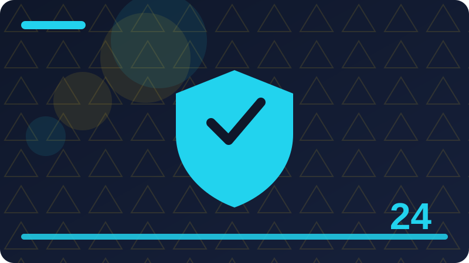

Chapter 24: Authorisation: Who May Do What

Section 1: Authorisation in Plain Words
This section looks closely at Authorisation in Plain Words, one piece of authorisation, the part of a back-end system that decides what a known user may do. It is worth slowing down here, because ideas that feel small at first often turn up again in much larger systems, and a clear understanding now will save you confusion later. Think of Authorisation in Plain Words as a tool you are adding to a growing toolkit: you do not need to master every detail today, but you should know what it is for, when it helps, and what a sensible first example looks like.
At its simplest, Authorisation in Plain Words is about making a decision clearly and then carrying it out the same way every time. A server cannot guess what you meant, so vague thinking becomes a visible mistake, while clear thinking becomes behaviour you can test and trust. That is why the examples in this section are deliberately small: with only a few lines to watch, you can see cause and effect without distraction, and you can trace exactly how each part contributes to the result.
A short example is the best way to make Authorisation in Plain Words concrete. Read the code slowly, line by line, and say what you think each line does before you run it. Then run it, compare the output with your prediction, and treat any difference as useful information rather than a failure. Programmers learn more from a surprising result than from a result that merely confirms what they already believed, because surprise points to a gap in understanding.
Beginners often stumble on Authorisation in Plain Words for the same few reasons, and naming those reasons in advance makes them easier to avoid. One common problem is rushing past the example without running it, which leaves a fragile understanding that collapses at the first small change. Another is copying code without understanding it, which works until the copied code needs to be adapted. A third is changing several things at once, which makes it impossible to tell which change caused a new result.
Beyond the first example, Authorisation in Plain Words becomes useful when it is combined with ideas from earlier chapters. Back-end work is rarely about one idea in isolation; it is about combining small, reliable pieces into something larger and safer. Each time you reuse an old idea in a new context, your understanding of both ideas deepens. To consolidate this section, try a tiny variation of the example before you continue. Change one value, one name, or one order, run the program again, and describe the difference in a sentence. That habit of deliberate variation is how programmers build intuition, and it takes only a few minutes. Authorisation fails quietly, which makes it more dangerous than a crash: the server answers happily, returns the wrong person's data, and nobody notices until real harm is done. Every endpoint needs its own check, because protecting the page that lists data while leaving the endpoint that serves it open is the same as not protecting it at all.
def can_read(user, note):
return note['owner'] == user['name'] or user['role'] == 'admin'
print(can_read({'name': 'ada', 'role': 'member'}, {'owner': 'ada'}))
print(can_read({'name': 'bob', 'role': 'member'}, {'owner': 'ada'}))Check: How would you explain Authorisation in Plain Words to a friend who has never built a server?
Section 2: Authentication Versus Authorisation Again
Begin with Authentication Versus Authorisation Again, and with the question it helps you answer while you are learning authorisation, the part of a back-end system that decides what a known user may do. Every new idea in back-end work earns its place by solving a real problem, not by sounding impressive, so this section starts from that problem. Once you can say in your own words why Authentication Versus Authorisation Again exists, the details become much easier to remember, and the code you write afterwards tends to be clearer and more deliberate.
The key to Authentication Versus Authorisation Again is to connect the new idea with something you already understand. Programmers often explain a new concept by comparing it with an everyday action, such as checking a ticket at a door, keeping a list, or sorting objects into boxes, and that comparison helps at first. But an analogy is only a starting point: the section then moves from the everyday picture to the precise behaviour on the server, so that you are not misled when the real behaviour is slightly different from the picture.
Work through the example for Authentication Versus Authorisation Again as if you were the server. Keep track of each value as it changes, and notice the order in which things happen, because order matters in server code far more than it does in ordinary writing. A line that looks harmless can change everything that follows, and a small change in order can turn a working handler into one that behaves strangely. Tracing by hand is slow, but it builds the mental habit that makes debugging possible later.
Watch out for the small details around Authentication Versus Authorisation Again, because servers reward attention to detail in a way that everyday language does not. A missing bracket, a misspelt name, or a value in the wrong place can stop a program or change its meaning, and the server will not guess what you meant. This strictness can feel unfriendly at first, but it is also fair: the same code behaves the same way every time, so once you find a mistake, fixing it fixes the program reliably.
Think about where Authentication Versus Authorisation Again fits into a system you might actually want to build, such as a small notes app, a task manager, or a simple site with user accounts. Real systems are built from the same building blocks you are learning here, repeated and combined in different ways. If you can picture a use for Authentication Versus Authorisation Again outside this book, you are much more likely to remember it. Before moving on, summarise Authentication Versus Authorisation Again in two or three sentences of your own, without looking back at this section. Writing a summary forces you to decide what matters most, and it reveals gaps that silent reading can hide. Every endpoint needs its own check, because protecting the page that lists data while leaving the endpoint that serves it open is the same as not protecting it at all.
def needs_role(user, role):
return user.get('role') == role
print(needs_role({'role': 'admin'}, 'admin'))Check: What is the main idea behind Authentication Versus Authorisation Again, in your own words?
Section 3: Who, What, and Which Resource
In authorisation, the part of a back-end system that decides what a known user may do, Who, What, and Which Resource is one of the ideas you will meet again and again, so it deserves a careful first look rather than a quick glance. This section explains the idea in plain language, shows a short example, and points out the mistakes that beginners most often make. You are not expected to memorise everything here; you are expected to recognise Who, What, and Which Resource when you see it, to use it in a small program, and to know where to look when you need a reminder.
When you meet Who, What, and Which Resource, ask three questions before you write any code. First, what goes in? Second, what comes out? Third, what could go wrong if the input is empty, unusual, or not what you expected? Those three questions work for almost every topic in this book. They turn a passive reading exercise into an active investigation, and they prepare you to test your own code instead of hoping that it happens to be right.
The example for Who, What, and Which Resource is intentionally ordinary, because ordinary examples reveal the normal behaviour you will rely on every day. Fancy examples can impress, but they often hide the simple rule underneath layers of detail. Once the simple rule is clear, you can apply it to harder problems with confidence, and you will recognise the same rule when it appears inside a longer program written by someone else.
As you practise Who, What, and Which Resource, expect to make mistakes, and expect those mistakes to be informative. An error message is not a judgement on your ability; it is a clue, often pointing at the line where Python first noticed a problem. Read it, look at that line, and ask what Python expected to find there. Over time, you will start to recognise familiar messages and fix them quickly, which is one of the clearest signs that you are becoming a back-end developer.
There is no single correct way to use Who, What, and Which Resource in every situation, and part of learning back-end work is developing judgement about trade-offs. A shorter solution is not always clearer, and a more general solution is not always better for a small task. For now, favour the version that you can explain to someone else, because code that is easy to explain is usually easy to fix, easy to extend, and easy to trust. Finally, remember that Who, What, and Which Resource is a step, not a destination. Return to this section whenever you need it, use the idea in a real small program, and let repeated use turn a new idea into a familiar tool. The rule to carry forward is simple to say and hard to practise: check the user, check the permission, and check the ownership, on every request, without exceptions.
def visible_notes(user, notes):
if user['role'] == 'admin':
return notes
return [n for n in notes if n['owner'] == user['name']]
notes = [{'owner': 'ada'}, {'owner': 'bob'}]
print(len(visible_notes({'name': 'ada', 'role': 'member'}, notes)))Check: When would Who, What, and Which Resource matter in a small back-end project you build yourself?
Section 4: Owners and Their Own Data
This section is about Owners and Their Own Data, and about building the habit of thinking like a server. A server meets strangers all day: requests arrive without faces, without context, and sometimes with bad intentions. Its job is to stay polite to genuine users and firm with everyone else, and that job starts with understanding exactly what Owners and Their Own Data is supposed to do. If you cannot state that job in one plain sentence, you are not ready to write the code yet.
Start by picturing a real user going through Owners and Their Own Data step by step. What do they send, what does the server check, and what do they get back? Drawing that journey on paper, even as three rough boxes with arrows, often reveals a missing step that code alone would hide. Many back-end bugs are not typing mistakes at all; they are missing steps, steps in the wrong order, or steps that only work for the happy path and fall apart when something unusual arrives.
Now look at the example code for Owners and Their Own Data with that journey in mind. Each line should map to one step of the journey, and if a line does not map to anything, ask whether it is really needed. Short, honest code is easier to review than clever code, and review matters here more than in most programming, because the code in this part of the book guards real people's accounts, data, and files. A reviewer should be able to read your handler and say, in plain words, what it allows and what it refuses.
Test Owners and Their Own Data the way an awkward user would, not the way a polite one would. Try an empty value, a very long value, a value that belongs to someone else, and a request that skips a step entirely. Write down what the server does in each case, and check that the answer is a safe refusal rather than a crash, a leak, or silent acceptance. This kind of testing is not pessimism; it is the core skill of back-end work, and it is what separates a demo that works once from a system you can trust.
To finish, explain Owners and Their Own Data out loud as if you were teaching a friend who has never built a server. If you get stuck, that sticking point is your next thing to practise, not a reason to move on quickly. Then try one small change to the example and predict the result before you run it. When prediction and result agree, your understanding is real; when they disagree, you have found exactly the question worth investigating next. Roles make large systems manageable, but they only work when the checks behind them are real code on the server, not labels in the interface that anyone can ignore. When you review authorisation, test as the wrong user, not just the right one, because the right user passing tells you nothing about whether the wrong user is stopped.
def check(user, action):
allowed = {'member': {'read', 'create'}, 'admin': {'read', 'create', 'delete'}}
return action in allowed.get(user['role'], set())
print(check({'role': 'member'}, 'delete'))
print(check({'role': 'admin'}, 'delete'))Check: What mistake are beginners most likely to make with Owners and Their Own Data?
Section 5: Roles in Plain Words
This section looks closely at Roles in Plain Words, one piece of authorisation, the part of a back-end system that decides what a known user may do. It is worth slowing down here, because ideas that feel small at first often turn up again in much larger systems, and a clear understanding now will save you confusion later. Think of Roles in Plain Words as a tool you are adding to a growing toolkit: you do not need to master every detail today, but you should know what it is for, when it helps, and what a sensible first example looks like.
At its simplest, Roles in Plain Words is about making a decision clearly and then carrying it out the same way every time. A server cannot guess what you meant, so vague thinking becomes a visible mistake, while clear thinking becomes behaviour you can test and trust. That is why the examples in this section are deliberately small: with only a few lines to watch, you can see cause and effect without distraction, and you can trace exactly how each part contributes to the result.
A short example is the best way to make Roles in Plain Words concrete. Read the code slowly, line by line, and say what you think each line does before you run it. Then run it, compare the output with your prediction, and treat any difference as useful information rather than a failure. Programmers learn more from a surprising result than from a result that merely confirms what they already believed, because surprise points to a gap in understanding.
Beginners often stumble on Roles in Plain Words for the same few reasons, and naming those reasons in advance makes them easier to avoid. One common problem is rushing past the example without running it, which leaves a fragile understanding that collapses at the first small change. Another is copying code without understanding it, which works until the copied code needs to be adapted. A third is changing several things at once, which makes it impossible to tell which change caused a new result.
Beyond the first example, Roles in Plain Words becomes useful when it is combined with ideas from earlier chapters. Back-end work is rarely about one idea in isolation; it is about combining small, reliable pieces into something larger and safer. Each time you reuse an old idea in a new context, your understanding of both ideas deepens. To consolidate this section, try a tiny variation of the example before you continue. Change one value, one name, or one order, run the program again, and describe the difference in a sentence. That habit of deliberate variation is how programmers build intuition, and it takes only a few minutes. When you review authorisation, test as the wrong user, not just the right one, because the right user passing tells you nothing about whether the wrong user is stopped. A clear audit trail of who changed permissions and when turns a confusing incident into an answerable question, and that alone is worth building early.
def deny_by_default(user):
return False
print(deny_by_default({'role': 'admin'}))Check: Why does Roles in Plain Words matter for systems that real people will trust with their data?
Section 6: The Admin Role
Begin with The Admin Role, and with the question it helps you answer while you are learning authorisation, the part of a back-end system that decides what a known user may do. Every new idea in back-end work earns its place by solving a real problem, not by sounding impressive, so this section starts from that problem. Once you can say in your own words why The Admin Role exists, the details become much easier to remember, and the code you write afterwards tends to be clearer and more deliberate.
The key to The Admin Role is to connect the new idea with something you already understand. Programmers often explain a new concept by comparing it with an everyday action, such as checking a ticket at a door, keeping a list, or sorting objects into boxes, and that comparison helps at first. But an analogy is only a starting point: the section then moves from the everyday picture to the precise behaviour on the server, so that you are not misled when the real behaviour is slightly different from the picture.
Work through the example for The Admin Role as if you were the server. Keep track of each value as it changes, and notice the order in which things happen, because order matters in server code far more than it does in ordinary writing. A line that looks harmless can change everything that follows, and a small change in order can turn a working handler into one that behaves strangely. Tracing by hand is slow, but it builds the mental habit that makes debugging possible later.
Watch out for the small details around The Admin Role, because servers reward attention to detail in a way that everyday language does not. A missing bracket, a misspelt name, or a value in the wrong place can stop a program or change its meaning, and the server will not guess what you meant. This strictness can feel unfriendly at first, but it is also fair: the same code behaves the same way every time, so once you find a mistake, fixing it fixes the program reliably.
Think about where The Admin Role fits into a system you might actually want to build, such as a small notes app, a task manager, or a simple site with user accounts. Real systems are built from the same building blocks you are learning here, repeated and combined in different ways. If you can picture a use for The Admin Role outside this book, you are much more likely to remember it. Before moving on, summarise The Admin Role in two or three sentences of your own, without looking back at this section. Writing a summary forces you to decide what matters most, and it reveals gaps that silent reading can hide. A clear audit trail of who changed permissions and when turns a confusing incident into an answerable question, and that alone is worth building early.
def owner_only(user, resource):
if resource['owner'] != user['name']:
return 'Forbidden'
return 'OK'
print(owner_only({'name': 'bob'}, {'owner': 'ada'}))Check: How would you explain The Admin Role to a friend who has never built a server?
Section 7: The Editor Role
In authorisation, the part of a back-end system that decides what a known user may do, The Editor Role is one of the ideas you will meet again and again, so it deserves a careful first look rather than a quick glance. This section explains the idea in plain language, shows a short example, and points out the mistakes that beginners most often make. You are not expected to memorise everything here; you are expected to recognise The Editor Role when you see it, to use it in a small program, and to know where to look when you need a reminder.
When you meet The Editor Role, ask three questions before you write any code. First, what goes in? Second, what comes out? Third, what could go wrong if the input is empty, unusual, or not what you expected? Those three questions work for almost every topic in this book. They turn a passive reading exercise into an active investigation, and they prepare you to test your own code instead of hoping that it happens to be right.
The example for The Editor Role is intentionally ordinary, because ordinary examples reveal the normal behaviour you will rely on every day. Fancy examples can impress, but they often hide the simple rule underneath layers of detail. Once the simple rule is clear, you can apply it to harder problems with confidence, and you will recognise the same rule when it appears inside a longer program written by someone else.
As you practise The Editor Role, expect to make mistakes, and expect those mistakes to be informative. An error message is not a judgement on your ability; it is a clue, often pointing at the line where Python first noticed a problem. Read it, look at that line, and ask what Python expected to find there. Over time, you will start to recognise familiar messages and fix them quickly, which is one of the clearest signs that you are becoming a back-end developer.
There is no single correct way to use The Editor Role in every situation, and part of learning back-end work is developing judgement about trade-offs. A shorter solution is not always clearer, and a more general solution is not always better for a small task. For now, favour the version that you can explain to someone else, because code that is easy to explain is usually easy to fix, easy to extend, and easy to trust. Finally, remember that The Editor Role is a step, not a destination. Return to this section whenever you need it, use the idea in a real small program, and let repeated use turn a new idea into a familiar tool. Authorisation fails quietly, which makes it more dangerous than a crash: the server answers happily, returns the wrong person's data, and nobody notices until real harm is done. Every endpoint needs its own check, because protecting the page that lists data while leaving the endpoint that serves it open is the same as not protecting it at all.
def filter_by_owner(user, rows):
return [r for r in rows if r['owner'] == user['name']]
print(filter_by_owner({'name': 'ada'}, [{'owner': 'ada'}, {'owner': 'bob'}]))Check: What is the main idea behind The Editor Role, in your own words?
Section 8: The Reader Role
This section is about The Reader Role, and about building the habit of thinking like a server. A server meets strangers all day: requests arrive without faces, without context, and sometimes with bad intentions. Its job is to stay polite to genuine users and firm with everyone else, and that job starts with understanding exactly what The Reader Role is supposed to do. If you cannot state that job in one plain sentence, you are not ready to write the code yet.
Start by picturing a real user going through The Reader Role step by step. What do they send, what does the server check, and what do they get back? Drawing that journey on paper, even as three rough boxes with arrows, often reveals a missing step that code alone would hide. Many back-end bugs are not typing mistakes at all; they are missing steps, steps in the wrong order, or steps that only work for the happy path and fall apart when something unusual arrives.
Now look at the example code for The Reader Role with that journey in mind. Each line should map to one step of the journey, and if a line does not map to anything, ask whether it is really needed. Short, honest code is easier to review than clever code, and review matters here more than in most programming, because the code in this part of the book guards real people's accounts, data, and files. A reviewer should be able to read your handler and say, in plain words, what it allows and what it refuses.
Test The Reader Role the way an awkward user would, not the way a polite one would. Try an empty value, a very long value, a value that belongs to someone else, and a request that skips a step entirely. Write down what the server does in each case, and check that the answer is a safe refusal rather than a crash, a leak, or silent acceptance. This kind of testing is not pessimism; it is the core skill of back-end work, and it is what separates a demo that works once from a system you can trust.
To finish, explain The Reader Role out loud as if you were teaching a friend who has never built a server. If you get stuck, that sticking point is your next thing to practise, not a reason to move on quickly. Then try one small change to the example and predict the result before you run it. When prediction and result agree, your understanding is real; when they disagree, you have found exactly the question worth investigating next. Every endpoint needs its own check, because protecting the page that lists data while leaving the endpoint that serves it open is the same as not protecting it at all. The rule to carry forward is simple to say and hard to practise: check the user, check the permission, and check the ownership, on every request, without exceptions.
import sqlite3
conn = sqlite3.connect(':memory:')
conn.execute('CREATE TABLE notes (owner TEXT, text TEXT)')
conn.execute("INSERT INTO notes VALUES ('ada', 'hello')")
rows = conn.execute('SELECT text FROM notes WHERE owner = ?', ('ada',)).fetchall()
print(rows)Check: When would The Reader Role matter in a small back-end project you build yourself?
Section 9: Permissions as Small Checks
This section looks closely at Permissions as Small Checks, one piece of authorisation, the part of a back-end system that decides what a known user may do. It is worth slowing down here, because ideas that feel small at first often turn up again in much larger systems, and a clear understanding now will save you confusion later. Think of Permissions as Small Checks as a tool you are adding to a growing toolkit: you do not need to master every detail today, but you should know what it is for, when it helps, and what a sensible first example looks like.
At its simplest, Permissions as Small Checks is about making a decision clearly and then carrying it out the same way every time. A server cannot guess what you meant, so vague thinking becomes a visible mistake, while clear thinking becomes behaviour you can test and trust. That is why the examples in this section are deliberately small: with only a few lines to watch, you can see cause and effect without distraction, and you can trace exactly how each part contributes to the result.
A short example is the best way to make Permissions as Small Checks concrete. Read the code slowly, line by line, and say what you think each line does before you run it. Then run it, compare the output with your prediction, and treat any difference as useful information rather than a failure. Programmers learn more from a surprising result than from a result that merely confirms what they already believed, because surprise points to a gap in understanding.
Beginners often stumble on Permissions as Small Checks for the same few reasons, and naming those reasons in advance makes them easier to avoid. One common problem is rushing past the example without running it, which leaves a fragile understanding that collapses at the first small change. Another is copying code without understanding it, which works until the copied code needs to be adapted. A third is changing several things at once, which makes it impossible to tell which change caused a new result.
Beyond the first example, Permissions as Small Checks becomes useful when it is combined with ideas from earlier chapters. Back-end work is rarely about one idea in isolation; it is about combining small, reliable pieces into something larger and safer. Each time you reuse an old idea in a new context, your understanding of both ideas deepens. To consolidate this section, try a tiny variation of the example before you continue. Change one value, one name, or one order, run the program again, and describe the difference in a sentence. That habit of deliberate variation is how programmers build intuition, and it takes only a few minutes. The rule to carry forward is simple to say and hard to practise: check the user, check the permission, and check the ownership, on every request, without exceptions. Roles make large systems manageable, but they only work when the checks behind them are real code on the server, not labels in the interface that anyone can ignore.
audit = []
def log_change(actor, action):
audit.append((actor, action))
log_change('ada', 'removed bob')
print(audit)Check: What mistake are beginners most likely to make with Permissions as Small Checks?
Section 10: Checking Permission Before Action
Begin with Checking Permission Before Action, and with the question it helps you answer while you are learning authorisation, the part of a back-end system that decides what a known user may do. Every new idea in back-end work earns its place by solving a real problem, not by sounding impressive, so this section starts from that problem. Once you can say in your own words why Checking Permission Before Action exists, the details become much easier to remember, and the code you write afterwards tends to be clearer and more deliberate.
The key to Checking Permission Before Action is to connect the new idea with something you already understand. Programmers often explain a new concept by comparing it with an everyday action, such as checking a ticket at a door, keeping a list, or sorting objects into boxes, and that comparison helps at first. But an analogy is only a starting point: the section then moves from the everyday picture to the precise behaviour on the server, so that you are not misled when the real behaviour is slightly different from the picture.
Work through the example for Checking Permission Before Action as if you were the server. Keep track of each value as it changes, and notice the order in which things happen, because order matters in server code far more than it does in ordinary writing. A line that looks harmless can change everything that follows, and a small change in order can turn a working handler into one that behaves strangely. Tracing by hand is slow, but it builds the mental habit that makes debugging possible later.
Watch out for the small details around Checking Permission Before Action, because servers reward attention to detail in a way that everyday language does not. A missing bracket, a misspelt name, or a value in the wrong place can stop a program or change its meaning, and the server will not guess what you meant. This strictness can feel unfriendly at first, but it is also fair: the same code behaves the same way every time, so once you find a mistake, fixing it fixes the program reliably.
Think about where Checking Permission Before Action fits into a system you might actually want to build, such as a small notes app, a task manager, or a simple site with user accounts. Real systems are built from the same building blocks you are learning here, repeated and combined in different ways. If you can picture a use for Checking Permission Before Action outside this book, you are much more likely to remember it. Before moving on, summarise Checking Permission Before Action in two or three sentences of your own, without looking back at this section. Writing a summary forces you to decide what matters most, and it reveals gaps that silent reading can hide. Roles make large systems manageable, but they only work when the checks behind them are real code on the server, not labels in the interface that anyone can ignore.
def sensitive_action(user, confirmed):
if not confirmed:
return 'Please confirm first.'
return 'Done.'
print(sensitive_action({'name': 'ada'}, False))Check: Why does Checking Permission Before Action matter for systems that real people will trust with their data?
Section 11: Never Trust the Client's Claim
In authorisation, the part of a back-end system that decides what a known user may do, Never Trust the Client's Claim is one of the ideas you will meet again and again, so it deserves a careful first look rather than a quick glance. This section explains the idea in plain language, shows a short example, and points out the mistakes that beginners most often make. You are not expected to memorise everything here; you are expected to recognise Never Trust the Client's Claim when you see it, to use it in a small program, and to know where to look when you need a reminder.
When you meet Never Trust the Client's Claim, ask three questions before you write any code. First, what goes in? Second, what comes out? Third, what could go wrong if the input is empty, unusual, or not what you expected? Those three questions work for almost every topic in this book. They turn a passive reading exercise into an active investigation, and they prepare you to test your own code instead of hoping that it happens to be right.
The example for Never Trust the Client's Claim is intentionally ordinary, because ordinary examples reveal the normal behaviour you will rely on every day. Fancy examples can impress, but they often hide the simple rule underneath layers of detail. Once the simple rule is clear, you can apply it to harder problems with confidence, and you will recognise the same rule when it appears inside a longer program written by someone else.
As you practise Never Trust the Client's Claim, expect to make mistakes, and expect those mistakes to be informative. An error message is not a judgement on your ability; it is a clue, often pointing at the line where Python first noticed a problem. Read it, look at that line, and ask what Python expected to find there. Over time, you will start to recognise familiar messages and fix them quickly, which is one of the clearest signs that you are becoming a back-end developer.
There is no single correct way to use Never Trust the Client's Claim in every situation, and part of learning back-end work is developing judgement about trade-offs. A shorter solution is not always clearer, and a more general solution is not always better for a small task. For now, favour the version that you can explain to someone else, because code that is easy to explain is usually easy to fix, easy to extend, and easy to trust. Finally, remember that Never Trust the Client's Claim is a step, not a destination. Return to this section whenever you need it, use the idea in a real small program, and let repeated use turn a new idea into a familiar tool. When you review authorisation, test as the wrong user, not just the right one, because the right user passing tells you nothing about whether the wrong user is stopped.
def can_read(user, note):
return note['owner'] == user['name'] or user['role'] == 'admin'
print(can_read({'name': 'ada', 'role': 'member'}, {'owner': 'ada'}))
print(can_read({'name': 'bob', 'role': 'member'}, {'owner': 'ada'}))Check: How would you explain Never Trust the Client's Claim to a friend who has never built a server?
Section 12: Hiding Buttons Is Not Security
This section is about Hiding Buttons Is Not Security, and about building the habit of thinking like a server. A server meets strangers all day: requests arrive without faces, without context, and sometimes with bad intentions. Its job is to stay polite to genuine users and firm with everyone else, and that job starts with understanding exactly what Hiding Buttons Is Not Security is supposed to do. If you cannot state that job in one plain sentence, you are not ready to write the code yet.
Start by picturing a real user going through Hiding Buttons Is Not Security step by step. What do they send, what does the server check, and what do they get back? Drawing that journey on paper, even as three rough boxes with arrows, often reveals a missing step that code alone would hide. Many back-end bugs are not typing mistakes at all; they are missing steps, steps in the wrong order, or steps that only work for the happy path and fall apart when something unusual arrives.
Now look at the example code for Hiding Buttons Is Not Security with that journey in mind. Each line should map to one step of the journey, and if a line does not map to anything, ask whether it is really needed. Short, honest code is easier to review than clever code, and review matters here more than in most programming, because the code in this part of the book guards real people's accounts, data, and files. A reviewer should be able to read your handler and say, in plain words, what it allows and what it refuses.
Test Hiding Buttons Is Not Security the way an awkward user would, not the way a polite one would. Try an empty value, a very long value, a value that belongs to someone else, and a request that skips a step entirely. Write down what the server does in each case, and check that the answer is a safe refusal rather than a crash, a leak, or silent acceptance. This kind of testing is not pessimism; it is the core skill of back-end work, and it is what separates a demo that works once from a system you can trust.
To finish, explain Hiding Buttons Is Not Security out loud as if you were teaching a friend who has never built a server. If you get stuck, that sticking point is your next thing to practise, not a reason to move on quickly. Then try one small change to the example and predict the result before you run it. When prediction and result agree, your understanding is real; when they disagree, you have found exactly the question worth investigating next. A clear audit trail of who changed permissions and when turns a confusing incident into an answerable question, and that alone is worth building early. Authorisation fails quietly, which makes it more dangerous than a crash: the server answers happily, returns the wrong person's data, and nobody notices until real harm is done.
def needs_role(user, role):
return user.get('role') == role
print(needs_role({'role': 'admin'}, 'admin'))Check: What is the main idea behind Hiding Buttons Is Not Security, in your own words?
Section 13: Protecting Every Endpoint
This section looks closely at Protecting Every Endpoint, one piece of authorisation, the part of a back-end system that decides what a known user may do. It is worth slowing down here, because ideas that feel small at first often turn up again in much larger systems, and a clear understanding now will save you confusion later. Think of Protecting Every Endpoint as a tool you are adding to a growing toolkit: you do not need to master every detail today, but you should know what it is for, when it helps, and what a sensible first example looks like.
At its simplest, Protecting Every Endpoint is about making a decision clearly and then carrying it out the same way every time. A server cannot guess what you meant, so vague thinking becomes a visible mistake, while clear thinking becomes behaviour you can test and trust. That is why the examples in this section are deliberately small: with only a few lines to watch, you can see cause and effect without distraction, and you can trace exactly how each part contributes to the result.
A short example is the best way to make Protecting Every Endpoint concrete. Read the code slowly, line by line, and say what you think each line does before you run it. Then run it, compare the output with your prediction, and treat any difference as useful information rather than a failure. Programmers learn more from a surprising result than from a result that merely confirms what they already believed, because surprise points to a gap in understanding.
Beginners often stumble on Protecting Every Endpoint for the same few reasons, and naming those reasons in advance makes them easier to avoid. One common problem is rushing past the example without running it, which leaves a fragile understanding that collapses at the first small change. Another is copying code without understanding it, which works until the copied code needs to be adapted. A third is changing several things at once, which makes it impossible to tell which change caused a new result.
Beyond the first example, Protecting Every Endpoint becomes useful when it is combined with ideas from earlier chapters. Back-end work is rarely about one idea in isolation; it is about combining small, reliable pieces into something larger and safer. Each time you reuse an old idea in a new context, your understanding of both ideas deepens. To consolidate this section, try a tiny variation of the example before you continue. Change one value, one name, or one order, run the program again, and describe the difference in a sentence. That habit of deliberate variation is how programmers build intuition, and it takes only a few minutes. Authorisation fails quietly, which makes it more dangerous than a crash: the server answers happily, returns the wrong person's data, and nobody notices until real harm is done. Every endpoint needs its own check, because protecting the page that lists data while leaving the endpoint that serves it open is the same as not protecting it at all.
def visible_notes(user, notes):
if user['role'] == 'admin':
return notes
return [n for n in notes if n['owner'] == user['name']]
notes = [{'owner': 'ada'}, {'owner': 'bob'}]
print(len(visible_notes({'name': 'ada', 'role': 'member'}, notes)))Check: When would Protecting Every Endpoint matter in a small back-end project you build yourself?
Section 14: Resource Identifiers and Guessing
Begin with Resource Identifiers and Guessing, and with the question it helps you answer while you are learning authorisation, the part of a back-end system that decides what a known user may do. Every new idea in back-end work earns its place by solving a real problem, not by sounding impressive, so this section starts from that problem. Once you can say in your own words why Resource Identifiers and Guessing exists, the details become much easier to remember, and the code you write afterwards tends to be clearer and more deliberate.
The key to Resource Identifiers and Guessing is to connect the new idea with something you already understand. Programmers often explain a new concept by comparing it with an everyday action, such as checking a ticket at a door, keeping a list, or sorting objects into boxes, and that comparison helps at first. But an analogy is only a starting point: the section then moves from the everyday picture to the precise behaviour on the server, so that you are not misled when the real behaviour is slightly different from the picture.
Work through the example for Resource Identifiers and Guessing as if you were the server. Keep track of each value as it changes, and notice the order in which things happen, because order matters in server code far more than it does in ordinary writing. A line that looks harmless can change everything that follows, and a small change in order can turn a working handler into one that behaves strangely. Tracing by hand is slow, but it builds the mental habit that makes debugging possible later.
Watch out for the small details around Resource Identifiers and Guessing, because servers reward attention to detail in a way that everyday language does not. A missing bracket, a misspelt name, or a value in the wrong place can stop a program or change its meaning, and the server will not guess what you meant. This strictness can feel unfriendly at first, but it is also fair: the same code behaves the same way every time, so once you find a mistake, fixing it fixes the program reliably.
Think about where Resource Identifiers and Guessing fits into a system you might actually want to build, such as a small notes app, a task manager, or a simple site with user accounts. Real systems are built from the same building blocks you are learning here, repeated and combined in different ways. If you can picture a use for Resource Identifiers and Guessing outside this book, you are much more likely to remember it. Before moving on, summarise Resource Identifiers and Guessing in two or three sentences of your own, without looking back at this section. Writing a summary forces you to decide what matters most, and it reveals gaps that silent reading can hide. Every endpoint needs its own check, because protecting the page that lists data while leaving the endpoint that serves it open is the same as not protecting it at all.
def check(user, action):
allowed = {'member': {'read', 'create'}, 'admin': {'read', 'create', 'delete'}}
return action in allowed.get(user['role'], set())
print(check({'role': 'member'}, 'delete'))
print(check({'role': 'admin'}, 'delete'))Check: What mistake are beginners most likely to make with Resource Identifiers and Guessing?
Section 15: Insecure Direct Object References
In authorisation, the part of a back-end system that decides what a known user may do, Insecure Direct Object References is one of the ideas you will meet again and again, so it deserves a careful first look rather than a quick glance. This section explains the idea in plain language, shows a short example, and points out the mistakes that beginners most often make. You are not expected to memorise everything here; you are expected to recognise Insecure Direct Object References when you see it, to use it in a small program, and to know where to look when you need a reminder.
When you meet Insecure Direct Object References, ask three questions before you write any code. First, what goes in? Second, what comes out? Third, what could go wrong if the input is empty, unusual, or not what you expected? Those three questions work for almost every topic in this book. They turn a passive reading exercise into an active investigation, and they prepare you to test your own code instead of hoping that it happens to be right.
The example for Insecure Direct Object References is intentionally ordinary, because ordinary examples reveal the normal behaviour you will rely on every day. Fancy examples can impress, but they often hide the simple rule underneath layers of detail. Once the simple rule is clear, you can apply it to harder problems with confidence, and you will recognise the same rule when it appears inside a longer program written by someone else.
As you practise Insecure Direct Object References, expect to make mistakes, and expect those mistakes to be informative. An error message is not a judgement on your ability; it is a clue, often pointing at the line where Python first noticed a problem. Read it, look at that line, and ask what Python expected to find there. Over time, you will start to recognise familiar messages and fix them quickly, which is one of the clearest signs that you are becoming a back-end developer.
There is no single correct way to use Insecure Direct Object References in every situation, and part of learning back-end work is developing judgement about trade-offs. A shorter solution is not always clearer, and a more general solution is not always better for a small task. For now, favour the version that you can explain to someone else, because code that is easy to explain is usually easy to fix, easy to extend, and easy to trust. Finally, remember that Insecure Direct Object References is a step, not a destination. Return to this section whenever you need it, use the idea in a real small program, and let repeated use turn a new idea into a familiar tool. The rule to carry forward is simple to say and hard to practise: check the user, check the permission, and check the ownership, on every request, without exceptions. Roles make large systems manageable, but they only work when the checks behind them are real code on the server, not labels in the interface that anyone can ignore.
def deny_by_default(user):
return False
print(deny_by_default({'role': 'admin'}))Check: Why does Insecure Direct Object References matter for systems that real people will trust with their data?
Section 16: Checking Ownership on Every Request
This section is about Checking Ownership on Every Request, and about building the habit of thinking like a server. A server meets strangers all day: requests arrive without faces, without context, and sometimes with bad intentions. Its job is to stay polite to genuine users and firm with everyone else, and that job starts with understanding exactly what Checking Ownership on Every Request is supposed to do. If you cannot state that job in one plain sentence, you are not ready to write the code yet.
Start by picturing a real user going through Checking Ownership on Every Request step by step. What do they send, what does the server check, and what do they get back? Drawing that journey on paper, even as three rough boxes with arrows, often reveals a missing step that code alone would hide. Many back-end bugs are not typing mistakes at all; they are missing steps, steps in the wrong order, or steps that only work for the happy path and fall apart when something unusual arrives.
Now look at the example code for Checking Ownership on Every Request with that journey in mind. Each line should map to one step of the journey, and if a line does not map to anything, ask whether it is really needed. Short, honest code is easier to review than clever code, and review matters here more than in most programming, because the code in this part of the book guards real people's accounts, data, and files. A reviewer should be able to read your handler and say, in plain words, what it allows and what it refuses.
Test Checking Ownership on Every Request the way an awkward user would, not the way a polite one would. Try an empty value, a very long value, a value that belongs to someone else, and a request that skips a step entirely. Write down what the server does in each case, and check that the answer is a safe refusal rather than a crash, a leak, or silent acceptance. This kind of testing is not pessimism; it is the core skill of back-end work, and it is what separates a demo that works once from a system you can trust.
To finish, explain Checking Ownership on Every Request out loud as if you were teaching a friend who has never built a server. If you get stuck, that sticking point is your next thing to practise, not a reason to move on quickly. Then try one small change to the example and predict the result before you run it. When prediction and result agree, your understanding is real; when they disagree, you have found exactly the question worth investigating next. Roles make large systems manageable, but they only work when the checks behind them are real code on the server, not labels in the interface that anyone can ignore. When you review authorisation, test as the wrong user, not just the right one, because the right user passing tells you nothing about whether the wrong user is stopped.
def owner_only(user, resource):
if resource['owner'] != user['name']:
return 'Forbidden'
return 'OK'
print(owner_only({'name': 'bob'}, {'owner': 'ada'}))Check: How would you explain Checking Ownership on Every Request to a friend who has never built a server?
Section 17: Listing Only What a User May See
This section looks closely at Listing Only What a User May See, one piece of authorisation, the part of a back-end system that decides what a known user may do. It is worth slowing down here, because ideas that feel small at first often turn up again in much larger systems, and a clear understanding now will save you confusion later. Think of Listing Only What a User May See as a tool you are adding to a growing toolkit: you do not need to master every detail today, but you should know what it is for, when it helps, and what a sensible first example looks like.
At its simplest, Listing Only What a User May See is about making a decision clearly and then carrying it out the same way every time. A server cannot guess what you meant, so vague thinking becomes a visible mistake, while clear thinking becomes behaviour you can test and trust. That is why the examples in this section are deliberately small: with only a few lines to watch, you can see cause and effect without distraction, and you can trace exactly how each part contributes to the result.
A short example is the best way to make Listing Only What a User May See concrete. Read the code slowly, line by line, and say what you think each line does before you run it. Then run it, compare the output with your prediction, and treat any difference as useful information rather than a failure. Programmers learn more from a surprising result than from a result that merely confirms what they already believed, because surprise points to a gap in understanding.
Beginners often stumble on Listing Only What a User May See for the same few reasons, and naming those reasons in advance makes them easier to avoid. One common problem is rushing past the example without running it, which leaves a fragile understanding that collapses at the first small change. Another is copying code without understanding it, which works until the copied code needs to be adapted. A third is changing several things at once, which makes it impossible to tell which change caused a new result.
Beyond the first example, Listing Only What a User May See becomes useful when it is combined with ideas from earlier chapters. Back-end work is rarely about one idea in isolation; it is about combining small, reliable pieces into something larger and safer. Each time you reuse an old idea in a new context, your understanding of both ideas deepens. To consolidate this section, try a tiny variation of the example before you continue. Change one value, one name, or one order, run the program again, and describe the difference in a sentence. That habit of deliberate variation is how programmers build intuition, and it takes only a few minutes. When you review authorisation, test as the wrong user, not just the right one, because the right user passing tells you nothing about whether the wrong user is stopped.
def filter_by_owner(user, rows):
return [r for r in rows if r['owner'] == user['name']]
print(filter_by_owner({'name': 'ada'}, [{'owner': 'ada'}, {'owner': 'bob'}]))Check: What is the main idea behind Listing Only What a User May See, in your own words?
Section 18: Filtering Queries by Owner
Begin with Filtering Queries by Owner, and with the question it helps you answer while you are learning authorisation, the part of a back-end system that decides what a known user may do. Every new idea in back-end work earns its place by solving a real problem, not by sounding impressive, so this section starts from that problem. Once you can say in your own words why Filtering Queries by Owner exists, the details become much easier to remember, and the code you write afterwards tends to be clearer and more deliberate.
The key to Filtering Queries by Owner is to connect the new idea with something you already understand. Programmers often explain a new concept by comparing it with an everyday action, such as checking a ticket at a door, keeping a list, or sorting objects into boxes, and that comparison helps at first. But an analogy is only a starting point: the section then moves from the everyday picture to the precise behaviour on the server, so that you are not misled when the real behaviour is slightly different from the picture.
Work through the example for Filtering Queries by Owner as if you were the server. Keep track of each value as it changes, and notice the order in which things happen, because order matters in server code far more than it does in ordinary writing. A line that looks harmless can change everything that follows, and a small change in order can turn a working handler into one that behaves strangely. Tracing by hand is slow, but it builds the mental habit that makes debugging possible later.
Watch out for the small details around Filtering Queries by Owner, because servers reward attention to detail in a way that everyday language does not. A missing bracket, a misspelt name, or a value in the wrong place can stop a program or change its meaning, and the server will not guess what you meant. This strictness can feel unfriendly at first, but it is also fair: the same code behaves the same way every time, so once you find a mistake, fixing it fixes the program reliably.
Think about where Filtering Queries by Owner fits into a system you might actually want to build, such as a small notes app, a task manager, or a simple site with user accounts. Real systems are built from the same building blocks you are learning here, repeated and combined in different ways. If you can picture a use for Filtering Queries by Owner outside this book, you are much more likely to remember it. Before moving on, summarise Filtering Queries by Owner in two or three sentences of your own, without looking back at this section. Writing a summary forces you to decide what matters most, and it reveals gaps that silent reading can hide. A clear audit trail of who changed permissions and when turns a confusing incident into an answerable question, and that alone is worth building early.
import sqlite3
conn = sqlite3.connect(':memory:')
conn.execute('CREATE TABLE notes (owner TEXT, text TEXT)')
conn.execute("INSERT INTO notes VALUES ('ada', 'hello')")
rows = conn.execute('SELECT text FROM notes WHERE owner = ?', ('ada',)).fetchall()
print(rows)Check: When would Filtering Queries by Owner matter in a small back-end project you build yourself?
Section 19: Role Checks in Code
In authorisation, the part of a back-end system that decides what a known user may do, Role Checks in Code is one of the ideas you will meet again and again, so it deserves a careful first look rather than a quick glance. This section explains the idea in plain language, shows a short example, and points out the mistakes that beginners most often make. You are not expected to memorise everything here; you are expected to recognise Role Checks in Code when you see it, to use it in a small program, and to know where to look when you need a reminder.
When you meet Role Checks in Code, ask three questions before you write any code. First, what goes in? Second, what comes out? Third, what could go wrong if the input is empty, unusual, or not what you expected? Those three questions work for almost every topic in this book. They turn a passive reading exercise into an active investigation, and they prepare you to test your own code instead of hoping that it happens to be right.
The example for Role Checks in Code is intentionally ordinary, because ordinary examples reveal the normal behaviour you will rely on every day. Fancy examples can impress, but they often hide the simple rule underneath layers of detail. Once the simple rule is clear, you can apply it to harder problems with confidence, and you will recognise the same rule when it appears inside a longer program written by someone else.
As you practise Role Checks in Code, expect to make mistakes, and expect those mistakes to be informative. An error message is not a judgement on your ability; it is a clue, often pointing at the line where Python first noticed a problem. Read it, look at that line, and ask what Python expected to find there. Over time, you will start to recognise familiar messages and fix them quickly, which is one of the clearest signs that you are becoming a back-end developer.
There is no single correct way to use Role Checks in Code in every situation, and part of learning back-end work is developing judgement about trade-offs. A shorter solution is not always clearer, and a more general solution is not always better for a small task. For now, favour the version that you can explain to someone else, because code that is easy to explain is usually easy to fix, easy to extend, and easy to trust. Finally, remember that Role Checks in Code is a step, not a destination. Return to this section whenever you need it, use the idea in a real small program, and let repeated use turn a new idea into a familiar tool. Authorisation fails quietly, which makes it more dangerous than a crash: the server answers happily, returns the wrong person's data, and nobody notices until real harm is done. Every endpoint needs its own check, because protecting the page that lists data while leaving the endpoint that serves it open is the same as not protecting it at all.
audit = []
def log_change(actor, action):
audit.append((actor, action))
log_change('ada', 'removed bob')
print(audit)Check: What mistake are beginners most likely to make with Role Checks in Code?
Section 20: Permission Checks in Code
This section is about Permission Checks in Code, and about building the habit of thinking like a server. A server meets strangers all day: requests arrive without faces, without context, and sometimes with bad intentions. Its job is to stay polite to genuine users and firm with everyone else, and that job starts with understanding exactly what Permission Checks in Code is supposed to do. If you cannot state that job in one plain sentence, you are not ready to write the code yet.
Start by picturing a real user going through Permission Checks in Code step by step. What do they send, what does the server check, and what do they get back? Drawing that journey on paper, even as three rough boxes with arrows, often reveals a missing step that code alone would hide. Many back-end bugs are not typing mistakes at all; they are missing steps, steps in the wrong order, or steps that only work for the happy path and fall apart when something unusual arrives.
Now look at the example code for Permission Checks in Code with that journey in mind. Each line should map to one step of the journey, and if a line does not map to anything, ask whether it is really needed. Short, honest code is easier to review than clever code, and review matters here more than in most programming, because the code in this part of the book guards real people's accounts, data, and files. A reviewer should be able to read your handler and say, in plain words, what it allows and what it refuses.
Test Permission Checks in Code the way an awkward user would, not the way a polite one would. Try an empty value, a very long value, a value that belongs to someone else, and a request that skips a step entirely. Write down what the server does in each case, and check that the answer is a safe refusal rather than a crash, a leak, or silent acceptance. This kind of testing is not pessimism; it is the core skill of back-end work, and it is what separates a demo that works once from a system you can trust.
To finish, explain Permission Checks in Code out loud as if you were teaching a friend who has never built a server. If you get stuck, that sticking point is your next thing to practise, not a reason to move on quickly. Then try one small change to the example and predict the result before you run it. When prediction and result agree, your understanding is real; when they disagree, you have found exactly the question worth investigating next. Every endpoint needs its own check, because protecting the page that lists data while leaving the endpoint that serves it open is the same as not protecting it at all. The rule to carry forward is simple to say and hard to practise: check the user, check the permission, and check the ownership, on every request, without exceptions.
def sensitive_action(user, confirmed):
if not confirmed:
return 'Please confirm first.'
return 'Done.'
print(sensitive_action({'name': 'ada'}, False))Check: Why does Permission Checks in Code matter for systems that real people will trust with their data?
Section 21: Middleware and Central Checks
This section looks closely at Middleware and Central Checks, one piece of authorisation, the part of a back-end system that decides what a known user may do. It is worth slowing down here, because ideas that feel small at first often turn up again in much larger systems, and a clear understanding now will save you confusion later. Think of Middleware and Central Checks as a tool you are adding to a growing toolkit: you do not need to master every detail today, but you should know what it is for, when it helps, and what a sensible first example looks like.
At its simplest, Middleware and Central Checks is about making a decision clearly and then carrying it out the same way every time. A server cannot guess what you meant, so vague thinking becomes a visible mistake, while clear thinking becomes behaviour you can test and trust. That is why the examples in this section are deliberately small: with only a few lines to watch, you can see cause and effect without distraction, and you can trace exactly how each part contributes to the result.
A short example is the best way to make Middleware and Central Checks concrete. Read the code slowly, line by line, and say what you think each line does before you run it. Then run it, compare the output with your prediction, and treat any difference as useful information rather than a failure. Programmers learn more from a surprising result than from a result that merely confirms what they already believed, because surprise points to a gap in understanding.
Beginners often stumble on Middleware and Central Checks for the same few reasons, and naming those reasons in advance makes them easier to avoid. One common problem is rushing past the example without running it, which leaves a fragile understanding that collapses at the first small change. Another is copying code without understanding it, which works until the copied code needs to be adapted. A third is changing several things at once, which makes it impossible to tell which change caused a new result.
Beyond the first example, Middleware and Central Checks becomes useful when it is combined with ideas from earlier chapters. Back-end work is rarely about one idea in isolation; it is about combining small, reliable pieces into something larger and safer. Each time you reuse an old idea in a new context, your understanding of both ideas deepens. To consolidate this section, try a tiny variation of the example before you continue. Change one value, one name, or one order, run the program again, and describe the difference in a sentence. That habit of deliberate variation is how programmers build intuition, and it takes only a few minutes. The rule to carry forward is simple to say and hard to practise: check the user, check the permission, and check the ownership, on every request, without exceptions. Roles make large systems manageable, but they only work when the checks behind them are real code on the server, not labels in the interface that anyone can ignore.
def can_read(user, note):
return note['owner'] == user['name'] or user['role'] == 'admin'
print(can_read({'name': 'ada', 'role': 'member'}, {'owner': 'ada'}))
print(can_read({'name': 'bob', 'role': 'member'}, {'owner': 'ada'}))Check: How would you explain Middleware and Central Checks to a friend who has never built a server?
Section 22: Default Deny in Plain Words
Begin with Default Deny in Plain Words, and with the question it helps you answer while you are learning authorisation, the part of a back-end system that decides what a known user may do. Every new idea in back-end work earns its place by solving a real problem, not by sounding impressive, so this section starts from that problem. Once you can say in your own words why Default Deny in Plain Words exists, the details become much easier to remember, and the code you write afterwards tends to be clearer and more deliberate.
The key to Default Deny in Plain Words is to connect the new idea with something you already understand. Programmers often explain a new concept by comparing it with an everyday action, such as checking a ticket at a door, keeping a list, or sorting objects into boxes, and that comparison helps at first. But an analogy is only a starting point: the section then moves from the everyday picture to the precise behaviour on the server, so that you are not misled when the real behaviour is slightly different from the picture.
Work through the example for Default Deny in Plain Words as if you were the server. Keep track of each value as it changes, and notice the order in which things happen, because order matters in server code far more than it does in ordinary writing. A line that looks harmless can change everything that follows, and a small change in order can turn a working handler into one that behaves strangely. Tracing by hand is slow, but it builds the mental habit that makes debugging possible later.
Watch out for the small details around Default Deny in Plain Words, because servers reward attention to detail in a way that everyday language does not. A missing bracket, a misspelt name, or a value in the wrong place can stop a program or change its meaning, and the server will not guess what you meant. This strictness can feel unfriendly at first, but it is also fair: the same code behaves the same way every time, so once you find a mistake, fixing it fixes the program reliably.
Think about where Default Deny in Plain Words fits into a system you might actually want to build, such as a small notes app, a task manager, or a simple site with user accounts. Real systems are built from the same building blocks you are learning here, repeated and combined in different ways. If you can picture a use for Default Deny in Plain Words outside this book, you are much more likely to remember it. Before moving on, summarise Default Deny in Plain Words in two or three sentences of your own, without looking back at this section. Writing a summary forces you to decide what matters most, and it reveals gaps that silent reading can hide. Roles make large systems manageable, but they only work when the checks behind them are real code on the server, not labels in the interface that anyone can ignore.
def needs_role(user, role):
return user.get('role') == role
print(needs_role({'role': 'admin'}, 'admin'))Check: What is the main idea behind Default Deny in Plain Words, in your own words?
Section 23: Allowing Explicitly, Not by Accident
In authorisation, the part of a back-end system that decides what a known user may do, Allowing Explicitly, Not by Accident is one of the ideas you will meet again and again, so it deserves a careful first look rather than a quick glance. This section explains the idea in plain language, shows a short example, and points out the mistakes that beginners most often make. You are not expected to memorise everything here; you are expected to recognise Allowing Explicitly, Not by Accident when you see it, to use it in a small program, and to know where to look when you need a reminder.
When you meet Allowing Explicitly, Not by Accident, ask three questions before you write any code. First, what goes in? Second, what comes out? Third, what could go wrong if the input is empty, unusual, or not what you expected? Those three questions work for almost every topic in this book. They turn a passive reading exercise into an active investigation, and they prepare you to test your own code instead of hoping that it happens to be right.
The example for Allowing Explicitly, Not by Accident is intentionally ordinary, because ordinary examples reveal the normal behaviour you will rely on every day. Fancy examples can impress, but they often hide the simple rule underneath layers of detail. Once the simple rule is clear, you can apply it to harder problems with confidence, and you will recognise the same rule when it appears inside a longer program written by someone else.
As you practise Allowing Explicitly, Not by Accident, expect to make mistakes, and expect those mistakes to be informative. An error message is not a judgement on your ability; it is a clue, often pointing at the line where Python first noticed a problem. Read it, look at that line, and ask what Python expected to find there. Over time, you will start to recognise familiar messages and fix them quickly, which is one of the clearest signs that you are becoming a back-end developer.
There is no single correct way to use Allowing Explicitly, Not by Accident in every situation, and part of learning back-end work is developing judgement about trade-offs. A shorter solution is not always clearer, and a more general solution is not always better for a small task. For now, favour the version that you can explain to someone else, because code that is easy to explain is usually easy to fix, easy to extend, and easy to trust. Finally, remember that Allowing Explicitly, Not by Accident is a step, not a destination. Return to this section whenever you need it, use the idea in a real small program, and let repeated use turn a new idea into a familiar tool. When you review authorisation, test as the wrong user, not just the right one, because the right user passing tells you nothing about whether the wrong user is stopped.
def visible_notes(user, notes):
if user['role'] == 'admin':
return notes
return [n for n in notes if n['owner'] == user['name']]
notes = [{'owner': 'ada'}, {'owner': 'bob'}]
print(len(visible_notes({'name': 'ada', 'role': 'member'}, notes)))Check: When would Allowing Explicitly, Not by Accident matter in a small back-end project you build yourself?
Section 24: Admin-Only Endpoints
This section is about Admin-Only Endpoints, and about building the habit of thinking like a server. A server meets strangers all day: requests arrive without faces, without context, and sometimes with bad intentions. Its job is to stay polite to genuine users and firm with everyone else, and that job starts with understanding exactly what Admin-Only Endpoints is supposed to do. If you cannot state that job in one plain sentence, you are not ready to write the code yet.
Start by picturing a real user going through Admin-Only Endpoints step by step. What do they send, what does the server check, and what do they get back? Drawing that journey on paper, even as three rough boxes with arrows, often reveals a missing step that code alone would hide. Many back-end bugs are not typing mistakes at all; they are missing steps, steps in the wrong order, or steps that only work for the happy path and fall apart when something unusual arrives.
Now look at the example code for Admin-Only Endpoints with that journey in mind. Each line should map to one step of the journey, and if a line does not map to anything, ask whether it is really needed. Short, honest code is easier to review than clever code, and review matters here more than in most programming, because the code in this part of the book guards real people's accounts, data, and files. A reviewer should be able to read your handler and say, in plain words, what it allows and what it refuses.
Test Admin-Only Endpoints the way an awkward user would, not the way a polite one would. Try an empty value, a very long value, a value that belongs to someone else, and a request that skips a step entirely. Write down what the server does in each case, and check that the answer is a safe refusal rather than a crash, a leak, or silent acceptance. This kind of testing is not pessimism; it is the core skill of back-end work, and it is what separates a demo that works once from a system you can trust.
To finish, explain Admin-Only Endpoints out loud as if you were teaching a friend who has never built a server. If you get stuck, that sticking point is your next thing to practise, not a reason to move on quickly. Then try one small change to the example and predict the result before you run it. When prediction and result agree, your understanding is real; when they disagree, you have found exactly the question worth investigating next. A clear audit trail of who changed permissions and when turns a confusing incident into an answerable question, and that alone is worth building early. Authorisation fails quietly, which makes it more dangerous than a crash: the server answers happily, returns the wrong person's data, and nobody notices until real harm is done.
def check(user, action):
allowed = {'member': {'read', 'create'}, 'admin': {'read', 'create', 'delete'}}
return action in allowed.get(user['role'], set())
print(check({'role': 'member'}, 'delete'))
print(check({'role': 'admin'}, 'delete'))Check: What mistake are beginners most likely to make with Admin-Only Endpoints?
Section 25: Moderator Powers and Limits
This section looks closely at Moderator Powers and Limits, one piece of authorisation, the part of a back-end system that decides what a known user may do. It is worth slowing down here, because ideas that feel small at first often turn up again in much larger systems, and a clear understanding now will save you confusion later. Think of Moderator Powers and Limits as a tool you are adding to a growing toolkit: you do not need to master every detail today, but you should know what it is for, when it helps, and what a sensible first example looks like.
At its simplest, Moderator Powers and Limits is about making a decision clearly and then carrying it out the same way every time. A server cannot guess what you meant, so vague thinking becomes a visible mistake, while clear thinking becomes behaviour you can test and trust. That is why the examples in this section are deliberately small: with only a few lines to watch, you can see cause and effect without distraction, and you can trace exactly how each part contributes to the result.
A short example is the best way to make Moderator Powers and Limits concrete. Read the code slowly, line by line, and say what you think each line does before you run it. Then run it, compare the output with your prediction, and treat any difference as useful information rather than a failure. Programmers learn more from a surprising result than from a result that merely confirms what they already believed, because surprise points to a gap in understanding.
Beginners often stumble on Moderator Powers and Limits for the same few reasons, and naming those reasons in advance makes them easier to avoid. One common problem is rushing past the example without running it, which leaves a fragile understanding that collapses at the first small change. Another is copying code without understanding it, which works until the copied code needs to be adapted. A third is changing several things at once, which makes it impossible to tell which change caused a new result.
Beyond the first example, Moderator Powers and Limits becomes useful when it is combined with ideas from earlier chapters. Back-end work is rarely about one idea in isolation; it is about combining small, reliable pieces into something larger and safer. Each time you reuse an old idea in a new context, your understanding of both ideas deepens. To consolidate this section, try a tiny variation of the example before you continue. Change one value, one name, or one order, run the program again, and describe the difference in a sentence. That habit of deliberate variation is how programmers build intuition, and it takes only a few minutes. Authorisation fails quietly, which makes it more dangerous than a crash: the server answers happily, returns the wrong person's data, and nobody notices until real harm is done. Every endpoint needs its own check, because protecting the page that lists data while leaving the endpoint that serves it open is the same as not protecting it at all.
def deny_by_default(user):
return False
print(deny_by_default({'role': 'admin'}))Check: Why does Moderator Powers and Limits matter for systems that real people will trust with their data?
Section 26: Multi-Tenant Thinking
Begin with Multi-Tenant Thinking, and with the question it helps you answer while you are learning authorisation, the part of a back-end system that decides what a known user may do. Every new idea in back-end work earns its place by solving a real problem, not by sounding impressive, so this section starts from that problem. Once you can say in your own words why Multi-Tenant Thinking exists, the details become much easier to remember, and the code you write afterwards tends to be clearer and more deliberate.
The key to Multi-Tenant Thinking is to connect the new idea with something you already understand. Programmers often explain a new concept by comparing it with an everyday action, such as checking a ticket at a door, keeping a list, or sorting objects into boxes, and that comparison helps at first. But an analogy is only a starting point: the section then moves from the everyday picture to the precise behaviour on the server, so that you are not misled when the real behaviour is slightly different from the picture.
Work through the example for Multi-Tenant Thinking as if you were the server. Keep track of each value as it changes, and notice the order in which things happen, because order matters in server code far more than it does in ordinary writing. A line that looks harmless can change everything that follows, and a small change in order can turn a working handler into one that behaves strangely. Tracing by hand is slow, but it builds the mental habit that makes debugging possible later.
Watch out for the small details around Multi-Tenant Thinking, because servers reward attention to detail in a way that everyday language does not. A missing bracket, a misspelt name, or a value in the wrong place can stop a program or change its meaning, and the server will not guess what you meant. This strictness can feel unfriendly at first, but it is also fair: the same code behaves the same way every time, so once you find a mistake, fixing it fixes the program reliably.
Think about where Multi-Tenant Thinking fits into a system you might actually want to build, such as a small notes app, a task manager, or a simple site with user accounts. Real systems are built from the same building blocks you are learning here, repeated and combined in different ways. If you can picture a use for Multi-Tenant Thinking outside this book, you are much more likely to remember it. Before moving on, summarise Multi-Tenant Thinking in two or three sentences of your own, without looking back at this section. Writing a summary forces you to decide what matters most, and it reveals gaps that silent reading can hide. Every endpoint needs its own check, because protecting the page that lists data while leaving the endpoint that serves it open is the same as not protecting it at all.
def owner_only(user, resource):
if resource['owner'] != user['name']:
return 'Forbidden'
return 'OK'
print(owner_only({'name': 'bob'}, {'owner': 'ada'}))Check: How would you explain Multi-Tenant Thinking to a friend who has never built a server?
Section 27: Teams and Shared Workspaces
In authorisation, the part of a back-end system that decides what a known user may do, Teams and Shared Workspaces is one of the ideas you will meet again and again, so it deserves a careful first look rather than a quick glance. This section explains the idea in plain language, shows a short example, and points out the mistakes that beginners most often make. You are not expected to memorise everything here; you are expected to recognise Teams and Shared Workspaces when you see it, to use it in a small program, and to know where to look when you need a reminder.
When you meet Teams and Shared Workspaces, ask three questions before you write any code. First, what goes in? Second, what comes out? Third, what could go wrong if the input is empty, unusual, or not what you expected? Those three questions work for almost every topic in this book. They turn a passive reading exercise into an active investigation, and they prepare you to test your own code instead of hoping that it happens to be right.
The example for Teams and Shared Workspaces is intentionally ordinary, because ordinary examples reveal the normal behaviour you will rely on every day. Fancy examples can impress, but they often hide the simple rule underneath layers of detail. Once the simple rule is clear, you can apply it to harder problems with confidence, and you will recognise the same rule when it appears inside a longer program written by someone else.
As you practise Teams and Shared Workspaces, expect to make mistakes, and expect those mistakes to be informative. An error message is not a judgement on your ability; it is a clue, often pointing at the line where Python first noticed a problem. Read it, look at that line, and ask what Python expected to find there. Over time, you will start to recognise familiar messages and fix them quickly, which is one of the clearest signs that you are becoming a back-end developer.
There is no single correct way to use Teams and Shared Workspaces in every situation, and part of learning back-end work is developing judgement about trade-offs. A shorter solution is not always clearer, and a more general solution is not always better for a small task. For now, favour the version that you can explain to someone else, because code that is easy to explain is usually easy to fix, easy to extend, and easy to trust. Finally, remember that Teams and Shared Workspaces is a step, not a destination. Return to this section whenever you need it, use the idea in a real small program, and let repeated use turn a new idea into a familiar tool. The rule to carry forward is simple to say and hard to practise: check the user, check the permission, and check the ownership, on every request, without exceptions. Roles make large systems manageable, but they only work when the checks behind them are real code on the server, not labels in the interface that anyone can ignore.
def filter_by_owner(user, rows):
return [r for r in rows if r['owner'] == user['name']]
print(filter_by_owner({'name': 'ada'}, [{'owner': 'ada'}, {'owner': 'bob'}]))Check: What is the main idea behind Teams and Shared Workspaces, in your own words?
Section 28: Inviting Members Safely
This section is about Inviting Members Safely, and about building the habit of thinking like a server. A server meets strangers all day: requests arrive without faces, without context, and sometimes with bad intentions. Its job is to stay polite to genuine users and firm with everyone else, and that job starts with understanding exactly what Inviting Members Safely is supposed to do. If you cannot state that job in one plain sentence, you are not ready to write the code yet.
Start by picturing a real user going through Inviting Members Safely step by step. What do they send, what does the server check, and what do they get back? Drawing that journey on paper, even as three rough boxes with arrows, often reveals a missing step that code alone would hide. Many back-end bugs are not typing mistakes at all; they are missing steps, steps in the wrong order, or steps that only work for the happy path and fall apart when something unusual arrives.
Now look at the example code for Inviting Members Safely with that journey in mind. Each line should map to one step of the journey, and if a line does not map to anything, ask whether it is really needed. Short, honest code is easier to review than clever code, and review matters here more than in most programming, because the code in this part of the book guards real people's accounts, data, and files. A reviewer should be able to read your handler and say, in plain words, what it allows and what it refuses.
Test Inviting Members Safely the way an awkward user would, not the way a polite one would. Try an empty value, a very long value, a value that belongs to someone else, and a request that skips a step entirely. Write down what the server does in each case, and check that the answer is a safe refusal rather than a crash, a leak, or silent acceptance. This kind of testing is not pessimism; it is the core skill of back-end work, and it is what separates a demo that works once from a system you can trust.
To finish, explain Inviting Members Safely out loud as if you were teaching a friend who has never built a server. If you get stuck, that sticking point is your next thing to practise, not a reason to move on quickly. Then try one small change to the example and predict the result before you run it. When prediction and result agree, your understanding is real; when they disagree, you have found exactly the question worth investigating next. Roles make large systems manageable, but they only work when the checks behind them are real code on the server, not labels in the interface that anyone can ignore. When you review authorisation, test as the wrong user, not just the right one, because the right user passing tells you nothing about whether the wrong user is stopped.
import sqlite3
conn = sqlite3.connect(':memory:')
conn.execute('CREATE TABLE notes (owner TEXT, text TEXT)')
conn.execute("INSERT INTO notes VALUES ('ada', 'hello')")
rows = conn.execute('SELECT text FROM notes WHERE owner = ?', ('ada',)).fetchall()
print(rows)Check: When would Inviting Members Safely matter in a small back-end project you build yourself?
Section 29: Changing a Member's Role
This section looks closely at Changing a Member's Role, one piece of authorisation, the part of a back-end system that decides what a known user may do. It is worth slowing down here, because ideas that feel small at first often turn up again in much larger systems, and a clear understanding now will save you confusion later. Think of Changing a Member's Role as a tool you are adding to a growing toolkit: you do not need to master every detail today, but you should know what it is for, when it helps, and what a sensible first example looks like.
At its simplest, Changing a Member's Role is about making a decision clearly and then carrying it out the same way every time. A server cannot guess what you meant, so vague thinking becomes a visible mistake, while clear thinking becomes behaviour you can test and trust. That is why the examples in this section are deliberately small: with only a few lines to watch, you can see cause and effect without distraction, and you can trace exactly how each part contributes to the result.
A short example is the best way to make Changing a Member's Role concrete. Read the code slowly, line by line, and say what you think each line does before you run it. Then run it, compare the output with your prediction, and treat any difference as useful information rather than a failure. Programmers learn more from a surprising result than from a result that merely confirms what they already believed, because surprise points to a gap in understanding.
Beginners often stumble on Changing a Member's Role for the same few reasons, and naming those reasons in advance makes them easier to avoid. One common problem is rushing past the example without running it, which leaves a fragile understanding that collapses at the first small change. Another is copying code without understanding it, which works until the copied code needs to be adapted. A third is changing several things at once, which makes it impossible to tell which change caused a new result.
Beyond the first example, Changing a Member's Role becomes useful when it is combined with ideas from earlier chapters. Back-end work is rarely about one idea in isolation; it is about combining small, reliable pieces into something larger and safer. Each time you reuse an old idea in a new context, your understanding of both ideas deepens. To consolidate this section, try a tiny variation of the example before you continue. Change one value, one name, or one order, run the program again, and describe the difference in a sentence. That habit of deliberate variation is how programmers build intuition, and it takes only a few minutes. When you review authorisation, test as the wrong user, not just the right one, because the right user passing tells you nothing about whether the wrong user is stopped. A clear audit trail of who changed permissions and when turns a confusing incident into an answerable question, and that alone is worth building early.
audit = []
def log_change(actor, action):
audit.append((actor, action))
log_change('ada', 'removed bob')
print(audit)Check: What mistake are beginners most likely to make with Changing a Member's Role?
Section 30: Removing a Member
Begin with Removing a Member, and with the question it helps you answer while you are learning authorisation, the part of a back-end system that decides what a known user may do. Every new idea in back-end work earns its place by solving a real problem, not by sounding impressive, so this section starts from that problem. Once you can say in your own words why Removing a Member exists, the details become much easier to remember, and the code you write afterwards tends to be clearer and more deliberate.
The key to Removing a Member is to connect the new idea with something you already understand. Programmers often explain a new concept by comparing it with an everyday action, such as checking a ticket at a door, keeping a list, or sorting objects into boxes, and that comparison helps at first. But an analogy is only a starting point: the section then moves from the everyday picture to the precise behaviour on the server, so that you are not misled when the real behaviour is slightly different from the picture.
Work through the example for Removing a Member as if you were the server. Keep track of each value as it changes, and notice the order in which things happen, because order matters in server code far more than it does in ordinary writing. A line that looks harmless can change everything that follows, and a small change in order can turn a working handler into one that behaves strangely. Tracing by hand is slow, but it builds the mental habit that makes debugging possible later.
Watch out for the small details around Removing a Member, because servers reward attention to detail in a way that everyday language does not. A missing bracket, a misspelt name, or a value in the wrong place can stop a program or change its meaning, and the server will not guess what you meant. This strictness can feel unfriendly at first, but it is also fair: the same code behaves the same way every time, so once you find a mistake, fixing it fixes the program reliably.
Think about where Removing a Member fits into a system you might actually want to build, such as a small notes app, a task manager, or a simple site with user accounts. Real systems are built from the same building blocks you are learning here, repeated and combined in different ways. If you can picture a use for Removing a Member outside this book, you are much more likely to remember it. Before moving on, summarise Removing a Member in two or three sentences of your own, without looking back at this section. Writing a summary forces you to decide what matters most, and it reveals gaps that silent reading can hide. A clear audit trail of who changed permissions and when turns a confusing incident into an answerable question, and that alone is worth building early.
def sensitive_action(user, confirmed):
if not confirmed:
return 'Please confirm first.'
return 'Done.'
print(sensitive_action({'name': 'ada'}, False))Check: Why does Removing a Member matter for systems that real people will trust with their data?
Section 31: Ownership Transfer
In authorisation, the part of a back-end system that decides what a known user may do, Ownership Transfer is one of the ideas you will meet again and again, so it deserves a careful first look rather than a quick glance. This section explains the idea in plain language, shows a short example, and points out the mistakes that beginners most often make. You are not expected to memorise everything here; you are expected to recognise Ownership Transfer when you see it, to use it in a small program, and to know where to look when you need a reminder.
When you meet Ownership Transfer, ask three questions before you write any code. First, what goes in? Second, what comes out? Third, what could go wrong if the input is empty, unusual, or not what you expected? Those three questions work for almost every topic in this book. They turn a passive reading exercise into an active investigation, and they prepare you to test your own code instead of hoping that it happens to be right.
The example for Ownership Transfer is intentionally ordinary, because ordinary examples reveal the normal behaviour you will rely on every day. Fancy examples can impress, but they often hide the simple rule underneath layers of detail. Once the simple rule is clear, you can apply it to harder problems with confidence, and you will recognise the same rule when it appears inside a longer program written by someone else.
As you practise Ownership Transfer, expect to make mistakes, and expect those mistakes to be informative. An error message is not a judgement on your ability; it is a clue, often pointing at the line where Python first noticed a problem. Read it, look at that line, and ask what Python expected to find there. Over time, you will start to recognise familiar messages and fix them quickly, which is one of the clearest signs that you are becoming a back-end developer.
There is no single correct way to use Ownership Transfer in every situation, and part of learning back-end work is developing judgement about trade-offs. A shorter solution is not always clearer, and a more general solution is not always better for a small task. For now, favour the version that you can explain to someone else, because code that is easy to explain is usually easy to fix, easy to extend, and easy to trust. Finally, remember that Ownership Transfer is a step, not a destination. Return to this section whenever you need it, use the idea in a real small program, and let repeated use turn a new idea into a familiar tool. Authorisation fails quietly, which makes it more dangerous than a crash: the server answers happily, returns the wrong person's data, and nobody notices until real harm is done. Every endpoint needs its own check, because protecting the page that lists data while leaving the endpoint that serves it open is the same as not protecting it at all.
def can_read(user, note):
return note['owner'] == user['name'] or user['role'] == 'admin'
print(can_read({'name': 'ada', 'role': 'member'}, {'owner': 'ada'}))
print(can_read({'name': 'bob', 'role': 'member'}, {'owner': 'ada'}))Check: How would you explain Ownership Transfer to a friend who has never built a server?
Section 32: Audit Logs for Permission Changes
This section is about Audit Logs for Permission Changes, and about building the habit of thinking like a server. A server meets strangers all day: requests arrive without faces, without context, and sometimes with bad intentions. Its job is to stay polite to genuine users and firm with everyone else, and that job starts with understanding exactly what Audit Logs for Permission Changes is supposed to do. If you cannot state that job in one plain sentence, you are not ready to write the code yet.
Start by picturing a real user going through Audit Logs for Permission Changes step by step. What do they send, what does the server check, and what do they get back? Drawing that journey on paper, even as three rough boxes with arrows, often reveals a missing step that code alone would hide. Many back-end bugs are not typing mistakes at all; they are missing steps, steps in the wrong order, or steps that only work for the happy path and fall apart when something unusual arrives.
Now look at the example code for Audit Logs for Permission Changes with that journey in mind. Each line should map to one step of the journey, and if a line does not map to anything, ask whether it is really needed. Short, honest code is easier to review than clever code, and review matters here more than in most programming, because the code in this part of the book guards real people's accounts, data, and files. A reviewer should be able to read your handler and say, in plain words, what it allows and what it refuses.
Test Audit Logs for Permission Changes the way an awkward user would, not the way a polite one would. Try an empty value, a very long value, a value that belongs to someone else, and a request that skips a step entirely. Write down what the server does in each case, and check that the answer is a safe refusal rather than a crash, a leak, or silent acceptance. This kind of testing is not pessimism; it is the core skill of back-end work, and it is what separates a demo that works once from a system you can trust.
To finish, explain Audit Logs for Permission Changes out loud as if you were teaching a friend who has never built a server. If you get stuck, that sticking point is your next thing to practise, not a reason to move on quickly. Then try one small change to the example and predict the result before you run it. When prediction and result agree, your understanding is real; when they disagree, you have found exactly the question worth investigating next. Every endpoint needs its own check, because protecting the page that lists data while leaving the endpoint that serves it open is the same as not protecting it at all. The rule to carry forward is simple to say and hard to practise: check the user, check the permission, and check the ownership, on every request, without exceptions.
def needs_role(user, role):
return user.get('role') == role
print(needs_role({'role': 'admin'}, 'admin'))Check: What is the main idea behind Audit Logs for Permission Changes, in your own words?
Section 33: Time-Limited Access
This section looks closely at Time-Limited Access, one piece of authorisation, the part of a back-end system that decides what a known user may do. It is worth slowing down here, because ideas that feel small at first often turn up again in much larger systems, and a clear understanding now will save you confusion later. Think of Time-Limited Access as a tool you are adding to a growing toolkit: you do not need to master every detail today, but you should know what it is for, when it helps, and what a sensible first example looks like.
At its simplest, Time-Limited Access is about making a decision clearly and then carrying it out the same way every time. A server cannot guess what you meant, so vague thinking becomes a visible mistake, while clear thinking becomes behaviour you can test and trust. That is why the examples in this section are deliberately small: with only a few lines to watch, you can see cause and effect without distraction, and you can trace exactly how each part contributes to the result.
A short example is the best way to make Time-Limited Access concrete. Read the code slowly, line by line, and say what you think each line does before you run it. Then run it, compare the output with your prediction, and treat any difference as useful information rather than a failure. Programmers learn more from a surprising result than from a result that merely confirms what they already believed, because surprise points to a gap in understanding.
Beginners often stumble on Time-Limited Access for the same few reasons, and naming those reasons in advance makes them easier to avoid. One common problem is rushing past the example without running it, which leaves a fragile understanding that collapses at the first small change. Another is copying code without understanding it, which works until the copied code needs to be adapted. A third is changing several things at once, which makes it impossible to tell which change caused a new result.
Beyond the first example, Time-Limited Access becomes useful when it is combined with ideas from earlier chapters. Back-end work is rarely about one idea in isolation; it is about combining small, reliable pieces into something larger and safer. Each time you reuse an old idea in a new context, your understanding of both ideas deepens. To consolidate this section, try a tiny variation of the example before you continue. Change one value, one name, or one order, run the program again, and describe the difference in a sentence. That habit of deliberate variation is how programmers build intuition, and it takes only a few minutes. The rule to carry forward is simple to say and hard to practise: check the user, check the permission, and check the ownership, on every request, without exceptions. Roles make large systems manageable, but they only work when the checks behind them are real code on the server, not labels in the interface that anyone can ignore.
def visible_notes(user, notes):
if user['role'] == 'admin':
return notes
return [n for n in notes if n['owner'] == user['name']]
notes = [{'owner': 'ada'}, {'owner': 'bob'}]
print(len(visible_notes({'name': 'ada', 'role': 'member'}, notes)))Check: When would Time-Limited Access matter in a small back-end project you build yourself?
Section 34: Temporary Permissions
Begin with Temporary Permissions, and with the question it helps you answer while you are learning authorisation, the part of a back-end system that decides what a known user may do. Every new idea in back-end work earns its place by solving a real problem, not by sounding impressive, so this section starts from that problem. Once you can say in your own words why Temporary Permissions exists, the details become much easier to remember, and the code you write afterwards tends to be clearer and more deliberate.
The key to Temporary Permissions is to connect the new idea with something you already understand. Programmers often explain a new concept by comparing it with an everyday action, such as checking a ticket at a door, keeping a list, or sorting objects into boxes, and that comparison helps at first. But an analogy is only a starting point: the section then moves from the everyday picture to the precise behaviour on the server, so that you are not misled when the real behaviour is slightly different from the picture.
Work through the example for Temporary Permissions as if you were the server. Keep track of each value as it changes, and notice the order in which things happen, because order matters in server code far more than it does in ordinary writing. A line that looks harmless can change everything that follows, and a small change in order can turn a working handler into one that behaves strangely. Tracing by hand is slow, but it builds the mental habit that makes debugging possible later.
Watch out for the small details around Temporary Permissions, because servers reward attention to detail in a way that everyday language does not. A missing bracket, a misspelt name, or a value in the wrong place can stop a program or change its meaning, and the server will not guess what you meant. This strictness can feel unfriendly at first, but it is also fair: the same code behaves the same way every time, so once you find a mistake, fixing it fixes the program reliably.
Think about where Temporary Permissions fits into a system you might actually want to build, such as a small notes app, a task manager, or a simple site with user accounts. Real systems are built from the same building blocks you are learning here, repeated and combined in different ways. If you can picture a use for Temporary Permissions outside this book, you are much more likely to remember it. Before moving on, summarise Temporary Permissions in two or three sentences of your own, without looking back at this section. Writing a summary forces you to decide what matters most, and it reveals gaps that silent reading can hide. Roles make large systems manageable, but they only work when the checks behind them are real code on the server, not labels in the interface that anyone can ignore.
def check(user, action):
allowed = {'member': {'read', 'create'}, 'admin': {'read', 'create', 'delete'}}
return action in allowed.get(user['role'], set())
print(check({'role': 'member'}, 'delete'))
print(check({'role': 'admin'}, 'delete'))Check: What mistake are beginners most likely to make with Temporary Permissions?
Section 35: Approval Steps for Sensitive Actions
In authorisation, the part of a back-end system that decides what a known user may do, Approval Steps for Sensitive Actions is one of the ideas you will meet again and again, so it deserves a careful first look rather than a quick glance. This section explains the idea in plain language, shows a short example, and points out the mistakes that beginners most often make. You are not expected to memorise everything here; you are expected to recognise Approval Steps for Sensitive Actions when you see it, to use it in a small program, and to know where to look when you need a reminder.
When you meet Approval Steps for Sensitive Actions, ask three questions before you write any code. First, what goes in? Second, what comes out? Third, what could go wrong if the input is empty, unusual, or not what you expected? Those three questions work for almost every topic in this book. They turn a passive reading exercise into an active investigation, and they prepare you to test your own code instead of hoping that it happens to be right.
The example for Approval Steps for Sensitive Actions is intentionally ordinary, because ordinary examples reveal the normal behaviour you will rely on every day. Fancy examples can impress, but they often hide the simple rule underneath layers of detail. Once the simple rule is clear, you can apply it to harder problems with confidence, and you will recognise the same rule when it appears inside a longer program written by someone else.
As you practise Approval Steps for Sensitive Actions, expect to make mistakes, and expect those mistakes to be informative. An error message is not a judgement on your ability; it is a clue, often pointing at the line where Python first noticed a problem. Read it, look at that line, and ask what Python expected to find there. Over time, you will start to recognise familiar messages and fix them quickly, which is one of the clearest signs that you are becoming a back-end developer.
There is no single correct way to use Approval Steps for Sensitive Actions in every situation, and part of learning back-end work is developing judgement about trade-offs. A shorter solution is not always clearer, and a more general solution is not always better for a small task. For now, favour the version that you can explain to someone else, because code that is easy to explain is usually easy to fix, easy to extend, and easy to trust. Finally, remember that Approval Steps for Sensitive Actions is a step, not a destination. Return to this section whenever you need it, use the idea in a real small program, and let repeated use turn a new idea into a familiar tool. When you review authorisation, test as the wrong user, not just the right one, because the right user passing tells you nothing about whether the wrong user is stopped.
def deny_by_default(user):
return False
print(deny_by_default({'role': 'admin'}))Check: Why does Approval Steps for Sensitive Actions matter for systems that real people will trust with their data?
Section 36: Requiring Re-Authentication
This section is about Requiring Re-Authentication, and about building the habit of thinking like a server. A server meets strangers all day: requests arrive without faces, without context, and sometimes with bad intentions. Its job is to stay polite to genuine users and firm with everyone else, and that job starts with understanding exactly what Requiring Re-Authentication is supposed to do. If you cannot state that job in one plain sentence, you are not ready to write the code yet.
Start by picturing a real user going through Requiring Re-Authentication step by step. What do they send, what does the server check, and what do they get back? Drawing that journey on paper, even as three rough boxes with arrows, often reveals a missing step that code alone would hide. Many back-end bugs are not typing mistakes at all; they are missing steps, steps in the wrong order, or steps that only work for the happy path and fall apart when something unusual arrives.
Now look at the example code for Requiring Re-Authentication with that journey in mind. Each line should map to one step of the journey, and if a line does not map to anything, ask whether it is really needed. Short, honest code is easier to review than clever code, and review matters here more than in most programming, because the code in this part of the book guards real people's accounts, data, and files. A reviewer should be able to read your handler and say, in plain words, what it allows and what it refuses.
Test Requiring Re-Authentication the way an awkward user would, not the way a polite one would. Try an empty value, a very long value, a value that belongs to someone else, and a request that skips a step entirely. Write down what the server does in each case, and check that the answer is a safe refusal rather than a crash, a leak, or silent acceptance. This kind of testing is not pessimism; it is the core skill of back-end work, and it is what separates a demo that works once from a system you can trust.
To finish, explain Requiring Re-Authentication out loud as if you were teaching a friend who has never built a server. If you get stuck, that sticking point is your next thing to practise, not a reason to move on quickly. Then try one small change to the example and predict the result before you run it. When prediction and result agree, your understanding is real; when they disagree, you have found exactly the question worth investigating next. A clear audit trail of who changed permissions and when turns a confusing incident into an answerable question, and that alone is worth building early. Authorisation fails quietly, which makes it more dangerous than a crash: the server answers happily, returns the wrong person's data, and nobody notices until real harm is done.
def owner_only(user, resource):
if resource['owner'] != user['name']:
return 'Forbidden'
return 'OK'
print(owner_only({'name': 'bob'}, {'owner': 'ada'}))Check: How would you explain Requiring Re-Authentication to a friend who has never built a server?
Section 37: Sensitive Actions and Confirmation
This section looks closely at Sensitive Actions and Confirmation, one piece of authorisation, the part of a back-end system that decides what a known user may do. It is worth slowing down here, because ideas that feel small at first often turn up again in much larger systems, and a clear understanding now will save you confusion later. Think of Sensitive Actions and Confirmation as a tool you are adding to a growing toolkit: you do not need to master every detail today, but you should know what it is for, when it helps, and what a sensible first example looks like.
At its simplest, Sensitive Actions and Confirmation is about making a decision clearly and then carrying it out the same way every time. A server cannot guess what you meant, so vague thinking becomes a visible mistake, while clear thinking becomes behaviour you can test and trust. That is why the examples in this section are deliberately small: with only a few lines to watch, you can see cause and effect without distraction, and you can trace exactly how each part contributes to the result.
A short example is the best way to make Sensitive Actions and Confirmation concrete. Read the code slowly, line by line, and say what you think each line does before you run it. Then run it, compare the output with your prediction, and treat any difference as useful information rather than a failure. Programmers learn more from a surprising result than from a result that merely confirms what they already believed, because surprise points to a gap in understanding.
Beginners often stumble on Sensitive Actions and Confirmation for the same few reasons, and naming those reasons in advance makes them easier to avoid. One common problem is rushing past the example without running it, which leaves a fragile understanding that collapses at the first small change. Another is copying code without understanding it, which works until the copied code needs to be adapted. A third is changing several things at once, which makes it impossible to tell which change caused a new result.
Beyond the first example, Sensitive Actions and Confirmation becomes useful when it is combined with ideas from earlier chapters. Back-end work is rarely about one idea in isolation; it is about combining small, reliable pieces into something larger and safer. Each time you reuse an old idea in a new context, your understanding of both ideas deepens. To consolidate this section, try a tiny variation of the example before you continue. Change one value, one name, or one order, run the program again, and describe the difference in a sentence. That habit of deliberate variation is how programmers build intuition, and it takes only a few minutes. Authorisation fails quietly, which makes it more dangerous than a crash: the server answers happily, returns the wrong person's data, and nobody notices until real harm is done. Every endpoint needs its own check, because protecting the page that lists data while leaving the endpoint that serves it open is the same as not protecting it at all.
def filter_by_owner(user, rows):
return [r for r in rows if r['owner'] == user['name']]
print(filter_by_owner({'name': 'ada'}, [{'owner': 'ada'}, {'owner': 'bob'}]))Check: What is the main idea behind Sensitive Actions and Confirmation, in your own words?
Section 38: Read Versus Write Permissions
Begin with Read Versus Write Permissions, and with the question it helps you answer while you are learning authorisation, the part of a back-end system that decides what a known user may do. Every new idea in back-end work earns its place by solving a real problem, not by sounding impressive, so this section starts from that problem. Once you can say in your own words why Read Versus Write Permissions exists, the details become much easier to remember, and the code you write afterwards tends to be clearer and more deliberate.
The key to Read Versus Write Permissions is to connect the new idea with something you already understand. Programmers often explain a new concept by comparing it with an everyday action, such as checking a ticket at a door, keeping a list, or sorting objects into boxes, and that comparison helps at first. But an analogy is only a starting point: the section then moves from the everyday picture to the precise behaviour on the server, so that you are not misled when the real behaviour is slightly different from the picture.
Work through the example for Read Versus Write Permissions as if you were the server. Keep track of each value as it changes, and notice the order in which things happen, because order matters in server code far more than it does in ordinary writing. A line that looks harmless can change everything that follows, and a small change in order can turn a working handler into one that behaves strangely. Tracing by hand is slow, but it builds the mental habit that makes debugging possible later.
Watch out for the small details around Read Versus Write Permissions, because servers reward attention to detail in a way that everyday language does not. A missing bracket, a misspelt name, or a value in the wrong place can stop a program or change its meaning, and the server will not guess what you meant. This strictness can feel unfriendly at first, but it is also fair: the same code behaves the same way every time, so once you find a mistake, fixing it fixes the program reliably.
Think about where Read Versus Write Permissions fits into a system you might actually want to build, such as a small notes app, a task manager, or a simple site with user accounts. Real systems are built from the same building blocks you are learning here, repeated and combined in different ways. If you can picture a use for Read Versus Write Permissions outside this book, you are much more likely to remember it. Before moving on, summarise Read Versus Write Permissions in two or three sentences of your own, without looking back at this section. Writing a summary forces you to decide what matters most, and it reveals gaps that silent reading can hide. Every endpoint needs its own check, because protecting the page that lists data while leaving the endpoint that serves it open is the same as not protecting it at all.
import sqlite3
conn = sqlite3.connect(':memory:')
conn.execute('CREATE TABLE notes (owner TEXT, text TEXT)')
conn.execute("INSERT INTO notes VALUES ('ada', 'hello')")
rows = conn.execute('SELECT text FROM notes WHERE owner = ?', ('ada',)).fetchall()
print(rows)Check: When would Read Versus Write Permissions matter in a small back-end project you build yourself?
Section 39: Delete Permissions and Their Danger
In authorisation, the part of a back-end system that decides what a known user may do, Delete Permissions and Their Danger is one of the ideas you will meet again and again, so it deserves a careful first look rather than a quick glance. This section explains the idea in plain language, shows a short example, and points out the mistakes that beginners most often make. You are not expected to memorise everything here; you are expected to recognise Delete Permissions and Their Danger when you see it, to use it in a small program, and to know where to look when you need a reminder.
When you meet Delete Permissions and Their Danger, ask three questions before you write any code. First, what goes in? Second, what comes out? Third, what could go wrong if the input is empty, unusual, or not what you expected? Those three questions work for almost every topic in this book. They turn a passive reading exercise into an active investigation, and they prepare you to test your own code instead of hoping that it happens to be right.
The example for Delete Permissions and Their Danger is intentionally ordinary, because ordinary examples reveal the normal behaviour you will rely on every day. Fancy examples can impress, but they often hide the simple rule underneath layers of detail. Once the simple rule is clear, you can apply it to harder problems with confidence, and you will recognise the same rule when it appears inside a longer program written by someone else.
As you practise Delete Permissions and Their Danger, expect to make mistakes, and expect those mistakes to be informative. An error message is not a judgement on your ability; it is a clue, often pointing at the line where Python first noticed a problem. Read it, look at that line, and ask what Python expected to find there. Over time, you will start to recognise familiar messages and fix them quickly, which is one of the clearest signs that you are becoming a back-end developer.
There is no single correct way to use Delete Permissions and Their Danger in every situation, and part of learning back-end work is developing judgement about trade-offs. A shorter solution is not always clearer, and a more general solution is not always better for a small task. For now, favour the version that you can explain to someone else, because code that is easy to explain is usually easy to fix, easy to extend, and easy to trust. Finally, remember that Delete Permissions and Their Danger is a step, not a destination. Return to this section whenever you need it, use the idea in a real small program, and let repeated use turn a new idea into a familiar tool. The rule to carry forward is simple to say and hard to practise: check the user, check the permission, and check the ownership, on every request, without exceptions.
audit = []
def log_change(actor, action):
audit.append((actor, action))
log_change('ada', 'removed bob')
print(audit)Check: What mistake are beginners most likely to make with Delete Permissions and Their Danger?
Section 40: Export Permissions and Data Leaks
This section is about Export Permissions and Data Leaks, and about building the habit of thinking like a server. A server meets strangers all day: requests arrive without faces, without context, and sometimes with bad intentions. Its job is to stay polite to genuine users and firm with everyone else, and that job starts with understanding exactly what Export Permissions and Data Leaks is supposed to do. If you cannot state that job in one plain sentence, you are not ready to write the code yet.
Start by picturing a real user going through Export Permissions and Data Leaks step by step. What do they send, what does the server check, and what do they get back? Drawing that journey on paper, even as three rough boxes with arrows, often reveals a missing step that code alone would hide. Many back-end bugs are not typing mistakes at all; they are missing steps, steps in the wrong order, or steps that only work for the happy path and fall apart when something unusual arrives.
Now look at the example code for Export Permissions and Data Leaks with that journey in mind. Each line should map to one step of the journey, and if a line does not map to anything, ask whether it is really needed. Short, honest code is easier to review than clever code, and review matters here more than in most programming, because the code in this part of the book guards real people's accounts, data, and files. A reviewer should be able to read your handler and say, in plain words, what it allows and what it refuses.
Test Export Permissions and Data Leaks the way an awkward user would, not the way a polite one would. Try an empty value, a very long value, a value that belongs to someone else, and a request that skips a step entirely. Write down what the server does in each case, and check that the answer is a safe refusal rather than a crash, a leak, or silent acceptance. This kind of testing is not pessimism; it is the core skill of back-end work, and it is what separates a demo that works once from a system you can trust.
To finish, explain Export Permissions and Data Leaks out loud as if you were teaching a friend who has never built a server. If you get stuck, that sticking point is your next thing to practise, not a reason to move on quickly. Then try one small change to the example and predict the result before you run it. When prediction and result agree, your understanding is real; when they disagree, you have found exactly the question worth investigating next. Roles make large systems manageable, but they only work when the checks behind them are real code on the server, not labels in the interface that anyone can ignore. When you review authorisation, test as the wrong user, not just the right one, because the right user passing tells you nothing about whether the wrong user is stopped.
def sensitive_action(user, confirmed):
if not confirmed:
return 'Please confirm first.'
return 'Done.'
print(sensitive_action({'name': 'ada'}, False))Check: Why does Export Permissions and Data Leaks matter for systems that real people will trust with their data?
Section 41: Search Results and Authorisation
This section looks closely at Search Results and Authorisation, one piece of authorisation, the part of a back-end system that decides what a known user may do. It is worth slowing down here, because ideas that feel small at first often turn up again in much larger systems, and a clear understanding now will save you confusion later. Think of Search Results and Authorisation as a tool you are adding to a growing toolkit: you do not need to master every detail today, but you should know what it is for, when it helps, and what a sensible first example looks like.
At its simplest, Search Results and Authorisation is about making a decision clearly and then carrying it out the same way every time. A server cannot guess what you meant, so vague thinking becomes a visible mistake, while clear thinking becomes behaviour you can test and trust. That is why the examples in this section are deliberately small: with only a few lines to watch, you can see cause and effect without distraction, and you can trace exactly how each part contributes to the result.
A short example is the best way to make Search Results and Authorisation concrete. Read the code slowly, line by line, and say what you think each line does before you run it. Then run it, compare the output with your prediction, and treat any difference as useful information rather than a failure. Programmers learn more from a surprising result than from a result that merely confirms what they already believed, because surprise points to a gap in understanding.
Beginners often stumble on Search Results and Authorisation for the same few reasons, and naming those reasons in advance makes them easier to avoid. One common problem is rushing past the example without running it, which leaves a fragile understanding that collapses at the first small change. Another is copying code without understanding it, which works until the copied code needs to be adapted. A third is changing several things at once, which makes it impossible to tell which change caused a new result.
Beyond the first example, Search Results and Authorisation becomes useful when it is combined with ideas from earlier chapters. Back-end work is rarely about one idea in isolation; it is about combining small, reliable pieces into something larger and safer. Each time you reuse an old idea in a new context, your understanding of both ideas deepens. To consolidate this section, try a tiny variation of the example before you continue. Change one value, one name, or one order, run the program again, and describe the difference in a sentence. That habit of deliberate variation is how programmers build intuition, and it takes only a few minutes. When you review authorisation, test as the wrong user, not just the right one, because the right user passing tells you nothing about whether the wrong user is stopped. A clear audit trail of who changed permissions and when turns a confusing incident into an answerable question, and that alone is worth building early.
def can_read(user, note):
return note['owner'] == user['name'] or user['role'] == 'admin'
print(can_read({'name': 'ada', 'role': 'member'}, {'owner': 'ada'}))
print(can_read({'name': 'bob', 'role': 'member'}, {'owner': 'ada'}))Check: How would you explain Search Results and Authorisation to a friend who has never built a server?
Section 42: Error Messages and Information Leaks
Begin with Error Messages and Information Leaks, and with the question it helps you answer while you are learning authorisation, the part of a back-end system that decides what a known user may do. Every new idea in back-end work earns its place by solving a real problem, not by sounding impressive, so this section starts from that problem. Once you can say in your own words why Error Messages and Information Leaks exists, the details become much easier to remember, and the code you write afterwards tends to be clearer and more deliberate.
The key to Error Messages and Information Leaks is to connect the new idea with something you already understand. Programmers often explain a new concept by comparing it with an everyday action, such as checking a ticket at a door, keeping a list, or sorting objects into boxes, and that comparison helps at first. But an analogy is only a starting point: the section then moves from the everyday picture to the precise behaviour on the server, so that you are not misled when the real behaviour is slightly different from the picture.
Work through the example for Error Messages and Information Leaks as if you were the server. Keep track of each value as it changes, and notice the order in which things happen, because order matters in server code far more than it does in ordinary writing. A line that looks harmless can change everything that follows, and a small change in order can turn a working handler into one that behaves strangely. Tracing by hand is slow, but it builds the mental habit that makes debugging possible later.
Watch out for the small details around Error Messages and Information Leaks, because servers reward attention to detail in a way that everyday language does not. A missing bracket, a misspelt name, or a value in the wrong place can stop a program or change its meaning, and the server will not guess what you meant. This strictness can feel unfriendly at first, but it is also fair: the same code behaves the same way every time, so once you find a mistake, fixing it fixes the program reliably.
Think about where Error Messages and Information Leaks fits into a system you might actually want to build, such as a small notes app, a task manager, or a simple site with user accounts. Real systems are built from the same building blocks you are learning here, repeated and combined in different ways. If you can picture a use for Error Messages and Information Leaks outside this book, you are much more likely to remember it. Before moving on, summarise Error Messages and Information Leaks in two or three sentences of your own, without looking back at this section. Writing a summary forces you to decide what matters most, and it reveals gaps that silent reading can hide. A clear audit trail of who changed permissions and when turns a confusing incident into an answerable question, and that alone is worth building early.
def needs_role(user, role):
return user.get('role') == role
print(needs_role({'role': 'admin'}, 'admin'))Check: What is the main idea behind Error Messages and Information Leaks, in your own words?
Section 43: Testing Authorisation by Hand
In authorisation, the part of a back-end system that decides what a known user may do, Testing Authorisation by Hand is one of the ideas you will meet again and again, so it deserves a careful first look rather than a quick glance. This section explains the idea in plain language, shows a short example, and points out the mistakes that beginners most often make. You are not expected to memorise everything here; you are expected to recognise Testing Authorisation by Hand when you see it, to use it in a small program, and to know where to look when you need a reminder.
When you meet Testing Authorisation by Hand, ask three questions before you write any code. First, what goes in? Second, what comes out? Third, what could go wrong if the input is empty, unusual, or not what you expected? Those three questions work for almost every topic in this book. They turn a passive reading exercise into an active investigation, and they prepare you to test your own code instead of hoping that it happens to be right.
The example for Testing Authorisation by Hand is intentionally ordinary, because ordinary examples reveal the normal behaviour you will rely on every day. Fancy examples can impress, but they often hide the simple rule underneath layers of detail. Once the simple rule is clear, you can apply it to harder problems with confidence, and you will recognise the same rule when it appears inside a longer program written by someone else.
As you practise Testing Authorisation by Hand, expect to make mistakes, and expect those mistakes to be informative. An error message is not a judgement on your ability; it is a clue, often pointing at the line where Python first noticed a problem. Read it, look at that line, and ask what Python expected to find there. Over time, you will start to recognise familiar messages and fix them quickly, which is one of the clearest signs that you are becoming a back-end developer.
There is no single correct way to use Testing Authorisation by Hand in every situation, and part of learning back-end work is developing judgement about trade-offs. A shorter solution is not always clearer, and a more general solution is not always better for a small task. For now, favour the version that you can explain to someone else, because code that is easy to explain is usually easy to fix, easy to extend, and easy to trust. Finally, remember that Testing Authorisation by Hand is a step, not a destination. Return to this section whenever you need it, use the idea in a real small program, and let repeated use turn a new idea into a familiar tool. Authorisation fails quietly, which makes it more dangerous than a crash: the server answers happily, returns the wrong person's data, and nobody notices until real harm is done. Every endpoint needs its own check, because protecting the page that lists data while leaving the endpoint that serves it open is the same as not protecting it at all.
def visible_notes(user, notes):
if user['role'] == 'admin':
return notes
return [n for n in notes if n['owner'] == user['name']]
notes = [{'owner': 'ada'}, {'owner': 'bob'}]
print(len(visible_notes({'name': 'ada', 'role': 'member'}, notes)))Check: When would Testing Authorisation by Hand matter in a small back-end project you build yourself?
Section 44: Testing as Another User
This section is about Testing as Another User, and about building the habit of thinking like a server. A server meets strangers all day: requests arrive without faces, without context, and sometimes with bad intentions. Its job is to stay polite to genuine users and firm with everyone else, and that job starts with understanding exactly what Testing as Another User is supposed to do. If you cannot state that job in one plain sentence, you are not ready to write the code yet.
Start by picturing a real user going through Testing as Another User step by step. What do they send, what does the server check, and what do they get back? Drawing that journey on paper, even as three rough boxes with arrows, often reveals a missing step that code alone would hide. Many back-end bugs are not typing mistakes at all; they are missing steps, steps in the wrong order, or steps that only work for the happy path and fall apart when something unusual arrives.
Now look at the example code for Testing as Another User with that journey in mind. Each line should map to one step of the journey, and if a line does not map to anything, ask whether it is really needed. Short, honest code is easier to review than clever code, and review matters here more than in most programming, because the code in this part of the book guards real people's accounts, data, and files. A reviewer should be able to read your handler and say, in plain words, what it allows and what it refuses.
Test Testing as Another User the way an awkward user would, not the way a polite one would. Try an empty value, a very long value, a value that belongs to someone else, and a request that skips a step entirely. Write down what the server does in each case, and check that the answer is a safe refusal rather than a crash, a leak, or silent acceptance. This kind of testing is not pessimism; it is the core skill of back-end work, and it is what separates a demo that works once from a system you can trust.
To finish, explain Testing as Another User out loud as if you were teaching a friend who has never built a server. If you get stuck, that sticking point is your next thing to practise, not a reason to move on quickly. Then try one small change to the example and predict the result before you run it. When prediction and result agree, your understanding is real; when they disagree, you have found exactly the question worth investigating next. Every endpoint needs its own check, because protecting the page that lists data while leaving the endpoint that serves it open is the same as not protecting it at all. The rule to carry forward is simple to say and hard to practise: check the user, check the permission, and check the ownership, on every request, without exceptions.
def check(user, action):
allowed = {'member': {'read', 'create'}, 'admin': {'read', 'create', 'delete'}}
return action in allowed.get(user['role'], set())
print(check({'role': 'member'}, 'delete'))
print(check({'role': 'admin'}, 'delete'))Check: What mistake are beginners most likely to make with Testing as Another User?
Section 45: Testing as an Anonymous Visitor
This section looks closely at Testing as an Anonymous Visitor, one piece of authorisation, the part of a back-end system that decides what a known user may do. It is worth slowing down here, because ideas that feel small at first often turn up again in much larger systems, and a clear understanding now will save you confusion later. Think of Testing as an Anonymous Visitor as a tool you are adding to a growing toolkit: you do not need to master every detail today, but you should know what it is for, when it helps, and what a sensible first example looks like.
At its simplest, Testing as an Anonymous Visitor is about making a decision clearly and then carrying it out the same way every time. A server cannot guess what you meant, so vague thinking becomes a visible mistake, while clear thinking becomes behaviour you can test and trust. That is why the examples in this section are deliberately small: with only a few lines to watch, you can see cause and effect without distraction, and you can trace exactly how each part contributes to the result.
A short example is the best way to make Testing as an Anonymous Visitor concrete. Read the code slowly, line by line, and say what you think each line does before you run it. Then run it, compare the output with your prediction, and treat any difference as useful information rather than a failure. Programmers learn more from a surprising result than from a result that merely confirms what they already believed, because surprise points to a gap in understanding.
Beginners often stumble on Testing as an Anonymous Visitor for the same few reasons, and naming those reasons in advance makes them easier to avoid. One common problem is rushing past the example without running it, which leaves a fragile understanding that collapses at the first small change. Another is copying code without understanding it, which works until the copied code needs to be adapted. A third is changing several things at once, which makes it impossible to tell which change caused a new result.
Beyond the first example, Testing as an Anonymous Visitor becomes useful when it is combined with ideas from earlier chapters. Back-end work is rarely about one idea in isolation; it is about combining small, reliable pieces into something larger and safer. Each time you reuse an old idea in a new context, your understanding of both ideas deepens. To consolidate this section, try a tiny variation of the example before you continue. Change one value, one name, or one order, run the program again, and describe the difference in a sentence. That habit of deliberate variation is how programmers build intuition, and it takes only a few minutes. The rule to carry forward is simple to say and hard to practise: check the user, check the permission, and check the ownership, on every request, without exceptions.
def deny_by_default(user):
return False
print(deny_by_default({'role': 'admin'}))Check: Why does Testing as an Anonymous Visitor matter for systems that real people will trust with their data?
Section 46: Common Authorisation Mistakes
Begin with Common Authorisation Mistakes, and with the question it helps you answer while you are learning authorisation, the part of a back-end system that decides what a known user may do. Every new idea in back-end work earns its place by solving a real problem, not by sounding impressive, so this section starts from that problem. Once you can say in your own words why Common Authorisation Mistakes exists, the details become much easier to remember, and the code you write afterwards tends to be clearer and more deliberate.
The key to Common Authorisation Mistakes is to connect the new idea with something you already understand. Programmers often explain a new concept by comparing it with an everyday action, such as checking a ticket at a door, keeping a list, or sorting objects into boxes, and that comparison helps at first. But an analogy is only a starting point: the section then moves from the everyday picture to the precise behaviour on the server, so that you are not misled when the real behaviour is slightly different from the picture.
Work through the example for Common Authorisation Mistakes as if you were the server. Keep track of each value as it changes, and notice the order in which things happen, because order matters in server code far more than it does in ordinary writing. A line that looks harmless can change everything that follows, and a small change in order can turn a working handler into one that behaves strangely. Tracing by hand is slow, but it builds the mental habit that makes debugging possible later.
Watch out for the small details around Common Authorisation Mistakes, because servers reward attention to detail in a way that everyday language does not. A missing bracket, a misspelt name, or a value in the wrong place can stop a program or change its meaning, and the server will not guess what you meant. This strictness can feel unfriendly at first, but it is also fair: the same code behaves the same way every time, so once you find a mistake, fixing it fixes the program reliably.
Think about where Common Authorisation Mistakes fits into a system you might actually want to build, such as a small notes app, a task manager, or a simple site with user accounts. Real systems are built from the same building blocks you are learning here, repeated and combined in different ways. If you can picture a use for Common Authorisation Mistakes outside this book, you are much more likely to remember it. Before moving on, summarise Common Authorisation Mistakes in two or three sentences of your own, without looking back at this section. Writing a summary forces you to decide what matters most, and it reveals gaps that silent reading can hide. Roles make large systems manageable, but they only work when the checks behind them are real code on the server, not labels in the interface that anyone can ignore.
def owner_only(user, resource):
if resource['owner'] != user['name']:
return 'Forbidden'
return 'OK'
print(owner_only({'name': 'bob'}, {'owner': 'ada'}))Check: How would you explain Common Authorisation Mistakes to a friend who has never built a server?
Section 47: Fixing a Missing Check
In authorisation, the part of a back-end system that decides what a known user may do, Fixing a Missing Check is one of the ideas you will meet again and again, so it deserves a careful first look rather than a quick glance. This section explains the idea in plain language, shows a short example, and points out the mistakes that beginners most often make. You are not expected to memorise everything here; you are expected to recognise Fixing a Missing Check when you see it, to use it in a small program, and to know where to look when you need a reminder.
When you meet Fixing a Missing Check, ask three questions before you write any code. First, what goes in? Second, what comes out? Third, what could go wrong if the input is empty, unusual, or not what you expected? Those three questions work for almost every topic in this book. They turn a passive reading exercise into an active investigation, and they prepare you to test your own code instead of hoping that it happens to be right.
The example for Fixing a Missing Check is intentionally ordinary, because ordinary examples reveal the normal behaviour you will rely on every day. Fancy examples can impress, but they often hide the simple rule underneath layers of detail. Once the simple rule is clear, you can apply it to harder problems with confidence, and you will recognise the same rule when it appears inside a longer program written by someone else.
As you practise Fixing a Missing Check, expect to make mistakes, and expect those mistakes to be informative. An error message is not a judgement on your ability; it is a clue, often pointing at the line where Python first noticed a problem. Read it, look at that line, and ask what Python expected to find there. Over time, you will start to recognise familiar messages and fix them quickly, which is one of the clearest signs that you are becoming a back-end developer.
There is no single correct way to use Fixing a Missing Check in every situation, and part of learning back-end work is developing judgement about trade-offs. A shorter solution is not always clearer, and a more general solution is not always better for a small task. For now, favour the version that you can explain to someone else, because code that is easy to explain is usually easy to fix, easy to extend, and easy to trust. Finally, remember that Fixing a Missing Check is a step, not a destination. Return to this section whenever you need it, use the idea in a real small program, and let repeated use turn a new idea into a familiar tool. When you review authorisation, test as the wrong user, not just the right one, because the right user passing tells you nothing about whether the wrong user is stopped. A clear audit trail of who changed permissions and when turns a confusing incident into an answerable question, and that alone is worth building early.
def filter_by_owner(user, rows):
return [r for r in rows if r['owner'] == user['name']]
print(filter_by_owner({'name': 'ada'}, [{'owner': 'ada'}, {'owner': 'bob'}]))Check: What is the main idea behind Fixing a Missing Check, in your own words?
Section 48: Authorisation for APIs
This section is about Authorisation for APIs, and about building the habit of thinking like a server. A server meets strangers all day: requests arrive without faces, without context, and sometimes with bad intentions. Its job is to stay polite to genuine users and firm with everyone else, and that job starts with understanding exactly what Authorisation for APIs is supposed to do. If you cannot state that job in one plain sentence, you are not ready to write the code yet.
Start by picturing a real user going through Authorisation for APIs step by step. What do they send, what does the server check, and what do they get back? Drawing that journey on paper, even as three rough boxes with arrows, often reveals a missing step that code alone would hide. Many back-end bugs are not typing mistakes at all; they are missing steps, steps in the wrong order, or steps that only work for the happy path and fall apart when something unusual arrives.
Now look at the example code for Authorisation for APIs with that journey in mind. Each line should map to one step of the journey, and if a line does not map to anything, ask whether it is really needed. Short, honest code is easier to review than clever code, and review matters here more than in most programming, because the code in this part of the book guards real people's accounts, data, and files. A reviewer should be able to read your handler and say, in plain words, what it allows and what it refuses.
Test Authorisation for APIs the way an awkward user would, not the way a polite one would. Try an empty value, a very long value, a value that belongs to someone else, and a request that skips a step entirely. Write down what the server does in each case, and check that the answer is a safe refusal rather than a crash, a leak, or silent acceptance. This kind of testing is not pessimism; it is the core skill of back-end work, and it is what separates a demo that works once from a system you can trust.
To finish, explain Authorisation for APIs out loud as if you were teaching a friend who has never built a server. If you get stuck, that sticking point is your next thing to practise, not a reason to move on quickly. Then try one small change to the example and predict the result before you run it. When prediction and result agree, your understanding is real; when they disagree, you have found exactly the question worth investigating next. A clear audit trail of who changed permissions and when turns a confusing incident into an answerable question, and that alone is worth building early. Authorisation fails quietly, which makes it more dangerous than a crash: the server answers happily, returns the wrong person's data, and nobody notices until real harm is done.
import sqlite3
conn = sqlite3.connect(':memory:')
conn.execute('CREATE TABLE notes (owner TEXT, text TEXT)')
conn.execute("INSERT INTO notes VALUES ('ada', 'hello')")
rows = conn.execute('SELECT text FROM notes WHERE owner = ?', ('ada',)).fetchall()
print(rows)Check: When would Authorisation for APIs matter in a small back-end project you build yourself?
Section 49: Authorisation for Admin Panels
This section looks closely at Authorisation for Admin Panels, one piece of authorisation, the part of a back-end system that decides what a known user may do. It is worth slowing down here, because ideas that feel small at first often turn up again in much larger systems, and a clear understanding now will save you confusion later. Think of Authorisation for Admin Panels as a tool you are adding to a growing toolkit: you do not need to master every detail today, but you should know what it is for, when it helps, and what a sensible first example looks like.
At its simplest, Authorisation for Admin Panels is about making a decision clearly and then carrying it out the same way every time. A server cannot guess what you meant, so vague thinking becomes a visible mistake, while clear thinking becomes behaviour you can test and trust. That is why the examples in this section are deliberately small: with only a few lines to watch, you can see cause and effect without distraction, and you can trace exactly how each part contributes to the result.
A short example is the best way to make Authorisation for Admin Panels concrete. Read the code slowly, line by line, and say what you think each line does before you run it. Then run it, compare the output with your prediction, and treat any difference as useful information rather than a failure. Programmers learn more from a surprising result than from a result that merely confirms what they already believed, because surprise points to a gap in understanding.
Beginners often stumble on Authorisation for Admin Panels for the same few reasons, and naming those reasons in advance makes them easier to avoid. One common problem is rushing past the example without running it, which leaves a fragile understanding that collapses at the first small change. Another is copying code without understanding it, which works until the copied code needs to be adapted. A third is changing several things at once, which makes it impossible to tell which change caused a new result.
Beyond the first example, Authorisation for Admin Panels becomes useful when it is combined with ideas from earlier chapters. Back-end work is rarely about one idea in isolation; it is about combining small, reliable pieces into something larger and safer. Each time you reuse an old idea in a new context, your understanding of both ideas deepens. To consolidate this section, try a tiny variation of the example before you continue. Change one value, one name, or one order, run the program again, and describe the difference in a sentence. That habit of deliberate variation is how programmers build intuition, and it takes only a few minutes. Authorisation fails quietly, which makes it more dangerous than a crash: the server answers happily, returns the wrong person's data, and nobody notices until real harm is done. Every endpoint needs its own check, because protecting the page that lists data while leaving the endpoint that serves it open is the same as not protecting it at all.
audit = []
def log_change(actor, action):
audit.append((actor, action))
log_change('ada', 'removed bob')
print(audit)Check: What mistake are beginners most likely to make with Authorisation for Admin Panels?
Section 50: Review: Every Request, Every Check
Begin with Review: Every Request, Every Check, and with the question it helps you answer while you are learning authorisation, the part of a back-end system that decides what a known user may do. Every new idea in back-end work earns its place by solving a real problem, not by sounding impressive, so this section starts from that problem. Once you can say in your own words why Review: Every Request, Every Check exists, the details become much easier to remember, and the code you write afterwards tends to be clearer and more deliberate.
The key to Review: Every Request, Every Check is to connect the new idea with something you already understand. Programmers often explain a new concept by comparing it with an everyday action, such as checking a ticket at a door, keeping a list, or sorting objects into boxes, and that comparison helps at first. But an analogy is only a starting point: the section then moves from the everyday picture to the precise behaviour on the server, so that you are not misled when the real behaviour is slightly different from the picture.
Work through the example for Review: Every Request, Every Check as if you were the server. Keep track of each value as it changes, and notice the order in which things happen, because order matters in server code far more than it does in ordinary writing. A line that looks harmless can change everything that follows, and a small change in order can turn a working handler into one that behaves strangely. Tracing by hand is slow, but it builds the mental habit that makes debugging possible later.
Watch out for the small details around Review: Every Request, Every Check, because servers reward attention to detail in a way that everyday language does not. A missing bracket, a misspelt name, or a value in the wrong place can stop a program or change its meaning, and the server will not guess what you meant. This strictness can feel unfriendly at first, but it is also fair: the same code behaves the same way every time, so once you find a mistake, fixing it fixes the program reliably.
Think about where Review: Every Request, Every Check fits into a system you might actually want to build, such as a small notes app, a task manager, or a simple site with user accounts. Real systems are built from the same building blocks you are learning here, repeated and combined in different ways. If you can picture a use for Review: Every Request, Every Check outside this book, you are much more likely to remember it. Before moving on, summarise Review: Every Request, Every Check in two or three sentences of your own, without looking back at this section. Writing a summary forces you to decide what matters most, and it reveals gaps that silent reading can hide. Every endpoint needs its own check, because protecting the page that lists data while leaving the endpoint that serves it open is the same as not protecting it at all.
def sensitive_action(user, confirmed):
if not confirmed:
return 'Please confirm first.'
return 'Done.'
print(sensitive_action({'name': 'ada'}, False))Check: Why does Review: Every Request, Every Check matter for systems that real people will trust with their data?
Practical Task
Build an authorisation check with Python: notes owned by different users, roles for member and admin, and a function that checks ownership or admin role before every read, update, and delete. Test each action as the owner, as another member, as an admin, and as an anonymous visitor, and record which attempts are allowed and which are refused.
Chapter Questions
- Why is hiding a button or a link not a real authorisation check?
- What three checks should a server make before it lets a user change a resource?
- How can listing, search, and export features leak data even when single-item pages are protected?
- Why should authorisation default to denying access until a permission is explicitly granted?
- How would you test authorisation as the owner, as another user, and as an anonymous visitor?
Comments